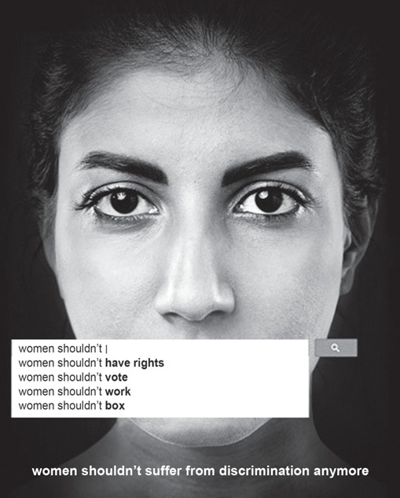
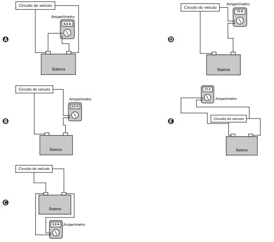
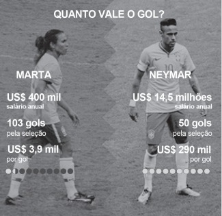
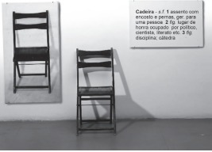
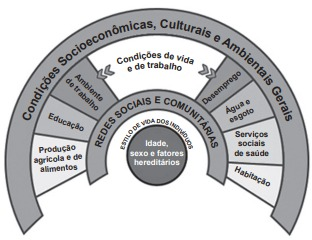
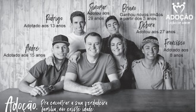
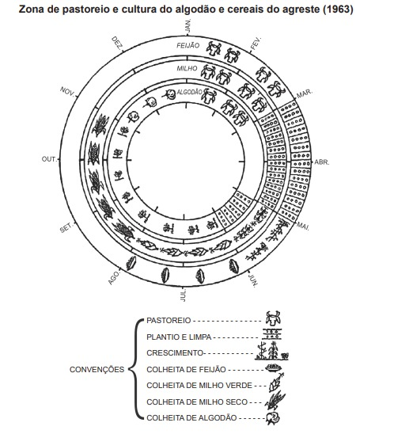
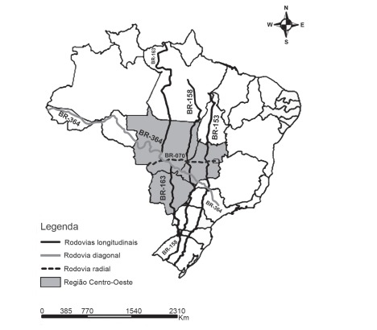
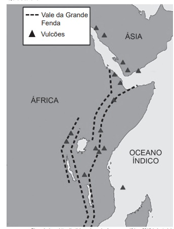
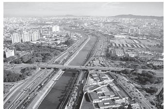

<!DOCTYPE html>
<html lang="en">
<head>
  <meta charset="utf-8">
  <title>Humanas 2020</title>
  <meta content="width=device-width, initial-scale=1.0" name="viewport">
  <meta content="" name="keywords">
  <meta content="" name="description">

  <!-- Favicons -->
  <link href="img/favicon.png" rel="icon">
  <link href="img/apple-touch-icon.png" rel="apple-touch-icon">

  <!-- Google Fonts -->
  <link href="https://fonts.googleapis.com/css?family=Oswald:400,300,700|Lato:400,700" rel="stylesheet">

  <!-- Bootstrap CSS File -->
  <link href="lib/bootstrap/css/bootstrap.min.css" rel="stylesheet">

  <!-- Libraries CSS Files -->
  <link href="lib/font-awesome/css/font-awesome.min.css" rel="stylesheet">
  <link href="lib/fancybox/fancybox.css" rel="stylesheet">

  <!-- Main Stylesheet File -->
  <link href="css/style.css" rel="stylesheet">

  <!-- =======================================================
    Template Name: Studio
    Template URL: https://templatemag.com/studio-bootstrap-agency-template/
    Author: TemplateMag.com
    License: https://templatemag.com/license/
  ======================================================= -->
</head>


  <div id="portfoliowrap" >
    <script src="js/humanas20.js"></script>
    <div class="container">
      <div class="row" style="background: rgb(255,255,255);
      backdrop-filter: blur(10px);
      -webkit-backdrop-filter: blur(10px);
      border-radius: 01rem;">
          <hr>
      <h3 class="questao">Questão 1 </h3>
      <h3><b> <center></center></b></h3>
      <div class="enunciado">
         <h4 class="questao">
            </h4>
          <h6 style="text-align: end;">Disponível em: https://sites.psu.edu. Acesso em: 12 jun. 2018</h6>
         <h4> Os recursos usados nesse pôster de divulgação de uma
             campanha levam o leitor a refletir sobre a necessidade de :</h4> </div>
  <div class="col" >
    <form name="f1">
    <div class="form-group" id="Q1A" >
      <input type="radio" name="q1" class="radio" value="q1a">
    <label for="q1a" >criticar o tipo de tratamento dado à mulher.</label>
    </div>
    <div class="form-group" id="Q1B">
      <input type="radio" name="q1" class="radio" value="q1b">
            <label for="q1b">rever o desempenho da mulher no trabalho</label>
    </div>
    <div class="form-group" id="Q1C">
      <input type="radio" name="q1"  class="radio" value="q1c">
      <label for="q1c">questionar a sobrecarga de atribuições da mulher </label>
    </div>
    <div class="form-group" id="Q1D">
      <input class="radio" name="q1"  type='radio' value="q1d" />
      <label for="q1d">analisar as pesquisas acerca dos direitos da mulher.</label>
    </div>
    <div class="form-group" id="Q1E">
      <input type="radio" name="q1"  class="radio" value="q1e">
      <label for="q1e">censurar a mulher pelo uso de determinadas palavras</label>
    </div>
  </form>
  
         
  </div>

<div class="col">
  <div class="form-group" style="background-color: aquamarine;">
    
  </div>

  
</div>
  <hr>
 <h3 class="questao">Questao 2</h3>
 <div class="enunciado">

  <h4 class="questao"></h4>

  <h6 style="text-align: end;">Disponível em: www.csuchico.edu. Acesso em: 11 dez. 2017.</h6>
  <h4> Nesse pôster de divulgação de uma campanha que
      aborda a diversidade e a inclusão, a interação dos
      elementos verbais e não verbais faz referência ao ato de:
    </h4> </div>
 <div class="col" >
  <form name="f2">
  <div class="form-group" id="Q2A" >
    <input type="radio" name="q2" class="radio" value="q2a">
  <label for="q2a" >estereotipar povos de certas culturas.</label>
  </div>
  <div class="form-group" id="Q2B">
    <input type="radio" name="q2" class="radio" value="q2b">
          <label for="q2b">discriminar hábitos de grupos minoritários </label>
  </div>
  <div class="form-group" id="Q2C">
    <input type="radio" name="q2"  class="radio" value="q2c">
    <label for="q2c">anir imigrantes de determinadas origens</label>
  </div>
  <div class="form-group" id="Q2D">
    <input class="radio" name="q2"  type='radio' value="q2d" />
    <label for="q2d">julgar padrões de beleza de diversas etnias</label>
  </div>
  <div class="form-group" id="Q2E">
    <input type="radio" name="q2"  class="radio" value="q2e">
    <label for="q2e">desvalorizar costumes de algumas sociedades.</label>
  </div>
</form>
     <hr>
<h3 class="questao">Questao 3</h3>
<div class="enunciado">

 <h4 class="questao">A Mother in a Refugee Camp
     No Madonna and Child could touch
     Her tenderness for a son
     She soon would have to forget...
     The air was heavy with odors of diarrhea,
     Of unwashed children with washed-out ribs
     And dried-up bottoms waddling in labored steps
     Behind blown-empty bellies. Other mothers there
     Had long ceased to care, but not this one:
     She held a ghost-smile between her teeth,
     and in her eyes the memory
     Of a mother’s pride... She had bathed him
     And rubbed him down with bare palms.
     She took from their bundle of possessions
     A broken comb and combed
     The rust-colored hair left on his skull
     And then — humming in her eyes — began carefully
     [to part it.
     In their former life this was perhaps
     A little daily act of no consequence
     Before his breakfast and school; now she did it
     Like putting flowers on a tiny grave
    </h4>
 <h6 style="text-align: end;">ACHEBE, C. Collected Poems. New York: Anchor Books, 2004.</h6>
 <h4> O escritor nigeriano Chinua Achebe traz uma reflexão
     sobre a situação dos refugiados em um cenário pós-guerra
     civil em seu país. Essa reflexão é construída no poema
     por meio da representação de uma mãe, explorando a(s)
   </h4> </div>
<div class="col" >
 <form name="f3">
 <div class="form-group" id="Q3A" >
   <input type="radio" name="q3" class="radio" value="q3a">
 <label for="q3a" >demonstração de orgulho por não precisar pedir
     doações.</label>
 </div>
 <div class="form-group" id="Q3B">
   <input type="radio" name="q3" class="radio" value="q3b">
         <label for="q3b">descrições artísticas detalhadas de uma obra
             conhecida. </label>
 </div>
 <div class="form-group" id="Q3C">
   <input type="radio" name="q3"  class="radio" value="q3c">
   <label for="q3c">aceitação de um diagnóstico de doença terminal do
       filho.</label>
 </div>
 <div class="form-group" id="Q3D">
   <input class="radio" name="q3"  type='radio' value="q3d" />
   <label for="q3d">consternação ao visitar o túmulo do filho recém-falecido. </label>
 </div>
 <div class="form-group" id="Q3E">
   <input type="radio" name="q3"  class="radio" value="q3e">
   <label for="q3e">impressões sensoriais experimentadas no ambiente.</label>
 </div>
</form>
    <hr>
<h3 class="questao">Questao 4</h3>
<div class="enunciado">
 <h4 class="questao"> A Minor Bird
     I have wished a bird would fly away,
     And not sing by my house all day;
     Have clapped my hands at him from the door
     When it seemed as if I could bear no more.
     The fault must partly have been in me.
     The bird was not to blame for his key.
     And of course there must be something wrong
     In wanting to silence any song.
    </h4>
 <h6 style="text-align: end;">DFROST, R. West-running Brook. New York: Henry Holt and Company, 1928.</h6>
 <h4> No poema de Robert Frost, as palavras “fault” e “blame”
     revelam por parte do eu lírico uma
   </h4> </div>
<div class="col" >
 <form name="f4">
 <div class="form-group" id="Q4A" >
   <input type="radio" name="q4" class="radio" value="q4a">
 <label for="q4a" >culpa por não poder cuidar do pássaro </label>
 </div>
 <div class="form-group" id="Q4B">
   <input type="radio" name="q4" class="radio" value="q4b">
         <label for="q4b">atitude errada por querer matar o pássaro.  </label>
 </div>
 <div class="form-group" id="Q4C">
   <input type="radio" name="q4"  class="radio" value="q4c">
   <label for="q4c">necessidade de entender o silêncio do pássaro. </label>
 </div>
 <div class="form-group" id="Q4D">
   <input class="radio" name="q4"  type='radio' value="q4d" />
   <label for="q4d">sensibilização com relação à natureza do pássaro  </label>
 </div>
 <div class="form-group" id="Q4E">
   <input type="radio" name="q4"  class="radio" value="q4e">
   <label for="q4e">irritação quanto à persistência do canto do pássaro</label>
 </div>
</form>
    <hr>
<h3 class="questao">Questao 5</h3>
<div class="enunciado">
 <h4 class="questao">Finally, Aisha finished with her customer and asked
     what colour Ifemelu wanted for her hair attachments.
     “Colour four.”
     “Not good colour,” Aisha said promptly.
     “That’s what I use.”
     “It look dirty. You don’t want colour one?”
     “Colour one is too black, it looks fake,” Ifemelu said,
     loosening her headwrap. “Sometimes I use colour two,
     but colour four is closest to my natural colour.”
     [...]
     She touched Ifemelu’s hair. “Why you don’t have
     relaxer?”
     “I like my hair the way God made it.”
     “But how you comb it? Hard to comb,” Aisha said.
     Ifemelu had brought her own comb. She gently combed
     her hair, dense, soft and tightly coiled, until it framed her
     head like a halo. “It’s not hard to comb if you moisturize
     it properly,” she said, slipping into the coaxing tone of the
     proselytizer that she used whenever she was trying to
     convince other black women about the merits of wearing
     their hair natural. Aisha snorted; she clearly could not
     understand why anybody would choose to suffer through
     combing natural hair, instead of simply relaxing it. She
     sectioned out Ifemelu’s hair, plucked a little attachment
     from the pile on the table and began deftly to twist.
    </h4>
 <h6 style="text-align: end;">ADICHIE, C. Americanah: A novel. New York: Anchor Books, 2013.</h6>
 <h4> A passagem do romance da escritora nigeriana traz
     um diálogo entre duas mulheres negras: a cabeleireira,
     Aisha, e a cliente, Ifemelu. O posicionamento da cliente é
     sustentado por argumentos que
   </h4> </div>
<div class="col" >
 <form name="f5">
 <div class="form-group" id="Q5A" >
   <input type="radio" name="q5" class="radio" value="q5a">
 <label for="q5a" >reforçam um padrão de beleza. </label>
 </div>
 <div class="form-group" id="Q5B">
   <input type="radio" name="q5" class="radio" value="q5b">
         <label for="q5b">retratam um conflito de gerações.</label>
 </div>
 <div class="form-group" id="Q5C">
   <input type="radio" name="q5"  class="radio" value="q5c">
   <label for="q5c">revelam uma atitude de resistência.  </label>
 </div>
 <div class="form-group" id="Q5D">
   <input class="radio" name="q5"  type='radio' value="q5d" />
   <label for="q5d">demonstram uma postura de imaturidade. </label>
 </div>
 <div class="form-group" id="Q5E">
   <input type="radio" name="q5"  class="radio" value="q5e">
   <label for="q5e">evidenciam uma mudança de comportamento.</label>
 </div>
</form>
    <hr>
<h3 class="questao">Questao 6</h3>
<div class="enunciado">
 <h4 class="questao">Vou-me embora p’ra Pasárgada foi o poema de
     mais longa gestação em toda a minha obra. Vi pela
     primeira vez esse nome Pasárgada quando tinha os
     meus dezesseis anos e foi num autor grego. [...] Esse
     nome de Pasárgada, que significa “campo dos persas”
     ou “tesouro dos persas”, suscitou na minha imaginação
     uma paisagem fabulosa, um país de delícias, como o
     de L’invitation au Voyage, de Baudelaire. Mais de vinte
     anos depois, quando eu morava só na minha casa da
     Rua do Curvelo, num momento de fundo desânimo,
     da mais aguda sensação de tudo o que eu não tinha
     feito em minha vida por motivo da doença, saltou-me
     de súbito do subconsciente este grito estapafúrdio:
     “Vou-me embora p’ra Pasárgada!” Senti na redondilha
     a primeira célula de um poema, e tentei realizá-lo,
     mas fracassei. Alguns anos depois, em idênticas
     circunstâncias de desalento e tédio, me ocorreu o
     mesmo desabafo de evasão da “vida besta”. Desta vez
     o poema saiu sem esforço como se já estivesse pronto
     dentro de mim. Gosto desse poema porque vejo nele,
     em escorço, toda a minha vida; [...] Não sou arquiteto,
     como meu pai desejava, não fiz nenhuma casa, mas
     reconstruí e “não de uma forma imperfeita neste mundo
     de aparências”, uma cidade ilustre, que hoje não é mais
     a Pasárgada de Ciro, e sim a “minha” Pasárgada
    </h4>
 <h6 style="text-align: end;">BANDEIRA, M. Itinerário de Pasárgada. Rio de Janeiro: Nova Fronteira; Brasília: INL, 1984.</h6>
 <h4> Os processos de interação comunicativa preveem a
     presença ativa de múltiplos elementos da comunicação,
     entre os quais se destacam as funções da linguagem.
     Nesse fragmento, a função da linguagem predominante é a</h4> </div>
<div class="col" >
 <form name="f6">
 <div class="form-group" id="Q6A" >
   <input type="radio" name="q6" class="radio" value="q6a">
 <label for="q6a" >emotiva, porque o poeta expõe os sentimentos de
     angústia que o levaram à criação poética. </label>
 </div>
 <div class="form-group" id="Q6B">
   <input type="radio" name="q6" class="radio" value="q6b">
         <label for="q6b">referencial, porque o texto informa sobre a origem do
             nome empregado em um famoso poema de Bandeira.</label>
 </div>
 <div class="form-group" id="Q6C">
   <input type="radio" name="q6"  class="radio" value="q6c">
   <label for="q6c">metalinguística, porque o poeta tece comentários
       sobre a gênese e o processo de escrita de um de
       seus poemas.</label>
 </div>
 <div class="form-group" id="Q6D">
   <input class="radio" name="q6"  type='radio' value="q6d" />
   <label for="q6d">poética, porque o texto aborda os elementos estéticos
       de um dos poemas mais conhecidos de Bandeira. </label>
 </div>
 <div class="form-group" id="Q6E">
   <input type="radio" name="q6"  class="radio" value="q6e">
   <label for="q6e">apelativa, porque o poeta tenta convencer os leitores
       sobre sua dificuldade de compor um poema</label>
 </div>
</form>
    <hr>
<h3 class="questao">Questao 7</h3>
<div class="enunciado">
 <h4 class="questao">
    </h4>
 <h6 style="text-align: end;">AZEVEDO, N.; LEÃO, W.; QUADROS, R. Coração pede socorro.
  Rio de Janeiro: Som Livre, 2018 (fragmento).</h6>
 <h4> A frase, título do filme, reproduz uma variedade
     linguística recorrente na fala de muitos brasileiros.
     Essa estrutura caracteriza-se pelo(a)</h4> </div>
<div class="col" >
 <form name="f7">
 <div class="form-group" id="Q7A" >
   <input type="radio" name="q7" class="radio" value="q7a">
 <label for="q7a" >uso de uma marcação temporal. </label>
 </div>
 <div class="form-group" id="Q7B">
   <input type="radio" name="q7" class="radio" value="q7b">
         <label for="q7b">imprecisão do referente de pessoa.</label>
 </div>
 <div class="form-group" id="Q7C">
   <input type="radio" name="q7"  class="radio" value="q7c">
   <label for="q7c">organização interrogativa da frase.</label>
 </div>
 <div class="form-group" id="Q7D">
   <input class="radio" name="q7"  type='radio' value="q7d" />
   <label for="q7d">utilização de um verbo de ação. </label>
 </div>
 <div class="form-group" id="Q7E">
   <input type="radio" name="q7"  class="radio" value="q7e">
   <label for="q7e">apagamento de uma preposição</label>
 </div>
</form>
    <hr>
<h3 class="questao">Questao 8</h3>
     <div class="enunciado">
         <h4 class="questao">  Slam do Corpo é um encontro pensado para surdos
             e ouvintes, existente desde 2014, em São Paulo. Uma
             iniciativa pioneira do grupo Corposinalizante, criado em
             2008. (Antes de seguirmos, vale a explicação: o termo
             slam vem do inglês e significa — numa nova acepção
             para o verbo geralmente utilizado para dizer “bater com
             força” — a “poesia falada nos ritmos das palavras e da
             cidade”). Nos saraus, o primeiro objetivo foi o de botar
             os poemas em Libras na roda, colocar os surdos para
             circular e entender esse encontro entre a poesia e a língua
             de sinais, compreender o encontro dessas duas línguas.
             Poemas de autoria própria, três minutos, um microfone.
             Sem figurino, nem adereços, nem acompanhamento
             musical. O que vale é modular a voz e o corpo, um
             trabalho artesanal de tornar a palavra “visível”, numa
             arena cujo objetivo maior é o de emocionar a plateia, tirar
             o público da passividade, seja pelo humor, horror, caos,
             doçura e outras tantas sensações.
    </h4>
 <h6 style="text-align: end;">NOVELLI, G. Poesia incorporada. Revista Continente, n. 189, set. 2016 (adaptado).</h6>
 <h4> Na prática artística mencionada no texto, o corpo assume
     papel de destaque ao articular diferentes linguagens com
     o intuito de. </h4> </div>
<div class="col" >
 <form name="f8">
 <div class="form-group" id="Q8A" >
   <input type="radio" name="q8" class="radio" value="q8a">
 <label for="q8a" >A imprimir ritmo e visibilidade à expressão poética. </label>
 </div>
 <div class="form-group" id="Q8B">
   <input type="radio" name="q8" class="radio" value="q8b">
         <label for="q8b">redefinir o espaço de circulação da poesia urbana.</label>
 </div>
 <div class="form-group" id="Q8C">
   <input type="radio" name="q8"  class="radio" value="q8c">
   <label for="q8c">estimular produções autorais de usuários de Libras.</label>
 </div>
 <div class="form-group" id="Q8D">
   <input class="radio" name="q8"  type='radio' value="q8d" />
   <label for="q8d">traduzir expressões verbais para a língua de sinais.</label>
 </div>
 <div class="form-group" id="Q8E">
   <input type="radio" name="q8"  class="radio" value="q8e">
   <label for="q8e">proporcionar performances estéticas de pessoas
       surdas</label>
 </div>
</form>
<h3 class="questao">Questao 9</h3>
<div class="enunciado">

 <h4 class="questao">É possível afirmar que muitas expressões idiomáticas
     transmitidas pela cultura regional possuem autores
     anônimos, no entanto, algumas delas surgiram em
     consequência de contextos históricos bem curiosos.
     “Aquele é um cabra da peste” é um bom exemplo dessas
     construções.
     Para compreender essa expressão tão repetida no
     Nordeste brasileiro, faz-se necessário voltar o olhar para o
     século 16. “Cabra” remete à forma com que os navegadores
     portugueses chamavam os índios. Já “peste” estaria ligada
     à questão da superação e resistência, ou mesmo uma
     associação com o diabo. Assim, com o passar dos anos,
     passou-se a utilizar tal expressão para denominar qualquer
     indivíduo que se mostre corajoso, ou mesmo insolente, já
     que a expressão pode ter caráter positivo ou negativo. Aliás,
     quem já não ficou de “nhe-nhe-nhém” por aí? O termo, que
     normalmente tem significado de conversa interminável,
     monótona ou resmungo, tem origem no tupi-guarani e
     “nhém” significa “falar”</h4>
 <h6 style="text-align: end;">Disponível em: http://leiturasdahistoria.uol.com.br. Acesso em: 13 dez. 2017</h6>
 <h4> A leitura do texto permite ao leitor entrar em contato com </h4> </div>
<div class="col" >
 <form name="f9">
 <div class="form-group" id="Q9A" >
   <input type="radio" name="q9" class="radio" value="q9a">
 <label for="q9a" >registros do inventário do português brasileiro. </label>
 </div>
 <div class="form-group" id="Q9B">
   <input type="radio" name="q9" class="radio" value="q9b">
         <label for="q9b">justificativas da variedade linguística do país.</label>
 </div>
 <div class="form-group" id="Q9C">
   <input type="radio" name="q9"  class="radio" value="q9c">
   <label for="q9c">influências da fala do nordestino no uso da língua.</label>
 </div>
 <div class="form-group" id="Q9D">
   <input class="radio" name="q9"  type='radio' value="q9d" />
   <label for="q9d">explorações do falar de um grupo social específico. </label>
 </div>
 <div class="form-group" id="Q9E">
   <input type="radio" name="q9"  class="radio" value="q9e">
   <label for="q9e">representações da mudança linguística do português.</label>
 </div>
</form>
    <hr>
<h3 class="questao">Questao 10</h3>
<div class="enunciado">
 <h4 class="questao">O ouro do século 21
     Cério, gadolínio, lutécio, promécio e érbio; sumário,
     térbio e disprósio; hólmio, túlio e itérbio. Essa lista de nomes
     esquisitos e pouco conhecidos pode parecer a escalação
     de um time de futebol, que ainda teria no banco de reservas
     lantânio, neodímio, praseodímio, európio, escândio e ítrio.
     Mas esses 17 metais, chamados de terras-raras, fazem
     parte da vida de quase todos os humanos do planeta.
     Chamados por muitos de “ouro do século 21”, “elementos do
     futuro” ou “vitaminas da indústria”, eles estão nos materiais
     usados na fabricação de lâmpadas, telas de computadores,
     tablets e celulares, motores de carros elétricos, baterias e
     até turbinas eólicas. Apesar de tantas aplicações, o Brasil,
     dono da segunda maior reserva do mundo desses metais,
     parou de extraí-los e usá-los em 2002. Agora, volta a pensar
     em retomar sua exploração.</h4>
 <h6 style="text-align: end;"> SILVEIRA, E. Disponível em: www.revistaplaneta.com.br.
     Acesso em: 6 dez. 2017 (adaptado).</h6>
 <h4> As aspas sinalizam expressões metafóricas empregadas
     intencionalmente pelo autor do texto para
   </h4> </div>
<div class="col" >
 <form name="f10">
 <div class="form-group" id="Q10A" >
   <input type="radio" name="q10" class="radio" value="q10a">
 <label for="q10a" >imprimir um tom irônico à reportagem.</label>
 </div>
 <div class="form-group" id="Q10B">
   <input type="radio" name="q10" class="radio" value="q10b">
         <label for="q10b">incorporar citações de especialistas à reportagem.</label>
 </div>
 <div class="form-group" id="Q10C">
   <input type="radio" name="q10"  class="radio" value="q10c">
   <label for="q10c">atribuir maior valor aos metais, objeto da reportagem.</label>
 </div>
 <div class="form-group" id="Q10D">
   <input class="radio" name="q10"  type='radio' value="q10d" />
   <label for="q10d">esclarecer termos científicos empregados na
       reportagem. </label>
 </div>
 <div class="form-group" id="Q10E">
   <input type="radio" name="q10"  class="radio" value="q10e">
   <label for="q10e">marcar a apropriação de termos de outra ciência pela
       reportagem.</label>
 </div>
</form>
    <hr>
<h3 class="questao">Questao 11</h3>
<div class="enunciado">

 <h4 class="questao">Na sua imaginação perturbada sentia a natureza toda
     agitando-se para sufocá-la. Aumentavam as sombras. No
     céu, nuvens colossais e túmidas rolavam para o abismo do
     horizonte... Na várzea, ao clarão indeciso do crepúsculo,
     os seres tomavam ares de monstros... As montanhas,
     subindo ameaçadoras da terra, perfilavam-se tenebrosas...
     Os caminhos, espreguiçando-se sobre os campos,
     animavam-se quais serpentes infinitas... As árvores soltas
     choravam ao vento, como carpideiras fantásticas da
     natureza morta... Os aflitivos pássaros noturnos gemiam
     agouros com pios fúnebres. Maria quis fugir, mas os
     membros cansados não acudiam aos ímpetos do medo
     e deixavam-na prostrada em uma angústia desesperada</h4>
 <h6 style="text-align: end;">ARANHA, J. P. G. Canaã. São Paulo: Ática, 1997.</h6>
 <h4> No trecho, o narrador mobiliza recursos de linguagem que
     geram uma expressividade centrada na percepção da</h4> </div>
<div class="col" >
 <form name="f11">
 <div class="form-group" id="Q11A" >
   <input type="radio" name="q11" class="radio" value="q11a">
 <label for="q11a" >relação entre a natureza opressiva e o desejo de
     libertação da personagem.</label>
 </div>
 <div class="form-group" id="Q11B">
   <input type="radio" name="q11" class="radio" value="q11b">
         <label for="q11b">confluência entre o estado emocional da personagem</label>
 </div>
 <div class="form-group" id="Q11C">
   <input type="radio" name="q11"  class="radio" value="q11c">
   <label for="q11c">prevalência do mundo natural em relação à fragilidade</label>
 </div>
 <div class="form-group" id="Q11D">
   <input class="radio" name="q11"  type='radio' value="q11d" />
   <label for="q11d">depreciação do sentido da vida diante da consciência
       da morte iminente.</label>
 </div>
 <div class="form-group" id="Q11E">
   <input type="radio" name="q11"  class="radio" value="q11e">
   <label for="q11e">instabilidade psicológica da personagem face à
       realidade hostil.</label>
 </div>
</form>
    <hr>
<h3 class="questao">Questao 12</h3>
<div class="enunciado">
  <h3>Texto I</h3>

 <h4 class="questao">É pau, é pedra, é o fim do caminho
     É um resto de toco, é um pouco sozinho
     É um caco de vidro, é a vida, é o sol
     É a noite, é a morte, é o laço, é o anzol
     É peroba-do-campo, é o nó da madeira
     Caingá, candeia, é o matita-pereira
</h4>
 <h6 style="text-align: end;">LOYOLA, J. Disponível em: http://ladyscomics.com.br.
  Acesso em: 8 dez. 2018 (adaptado).</h6>
  <h3>Texto II</h3>

 <h4 class="questao">A inspiração súbita e certeira do compositor serve
     ainda de exemplo do lema antigo: nada vem do nada.
     Para ninguém, nem mesmo para Tom Jobim. Duas
     fontes são razoavelmente conhecidas. A primeira é o
     poema O caçador de esmeraldas, do mestre parnasiano
     Olavo Bilac: “Foi em março, ao findar da chuva,
     quase à entrada/ do outono, quando a terra em sede
     requeimada/ bebera longamente as águas da estação
     [...]”. E a outra é um ponto de macumba, gravado com
     sucesso por J. B. Carvalho, do Conjunto Tupi: “É pau, é
     pedra, é seixo miúdo, roda a baiana por cima de tudo”.
     Combinar Olavo Bilac e macumba já seria bom; mas o
     que se vê em Águas de março vai muito além: tudo se
     transforma numa outra coisa e numa outra música, que
     recompõem o mundo para nós.

</h4>
 <h6 style="text-align: end;">Disponível em: https://catracalivre.com.br. Acesso em: 8 dez. 2018 (adaptado).</h6>
 <h4> Ao situar a composição no panorama cultural brasileiro, o
     Texto II destaca o(a).</h4> </div>
<div class="col" >
 <form name="f12">
 <div class="form-group" id="Q12A" >
   <input type="radio" name="q12" class="radio" value="q12a">
 <label for="q12a" >diálogo que a letra da canção estabelece com
     diferentes tradições da cultura nacional.
  </label>
 </div>
 <div class="form-group" id="Q12B">
   <input type="radio" name="q12" class="radio" value="q12b">
         <label for="q12b">singularidade com que o compositor converte
             referências eruditas em populares </label>
 </div>
 <div class="form-group" id="Q12C">
   <input type="radio" name="q12"  class="radio" value="q12c">
   <label for="q12c">caráter inovador com que o compositor concebe o
       processo de criação artística. </label>
 </div>
 <div class="form-group" id="Q12D">
   <input class="radio" name="q12"  type='radio' value="q12d" />
   <label for="q12d">relativização que a letra da canção promove na
       concepção tradicional de originalidade. </label>
 </div>
 <div class="form-group" id="Q12E">
   <input type="radio" name="q12"  class="radio" value="q12e">
   <label for="q12e">resgate que a letra da canção promove de obras
       pouco conhecidas pelo público no país.</label>
 </div>
</form>
    <hr>
<h3 class="questao">Questao 13</h3>
<div class="enunciado">
 <h4 class="questao">Deu vontade de jogar, mas não sabe como reunir
     os amigos...<br>
     Muitas vezes é difícil encontrar grupos para bater
     uma bola. Em função disso, estão sendo disponibilizados
     aplicativos que reúnem times e reservam espaços para
     os adeptos da paixão nacional. Num exemplo dessas
     iniciativas, é possível organizar uma partida de futebol,
     se inscrever para participar de um jogo, alugar campos e
     quadras, convidar jogadores. O aplicativo tem dois tipos
     de usuários: um que o usa como ferramenta de gestão
     do grupo, convidando amigos para jogar, vendo quem
     confirmou e avaliando os jogos. Outro usuário é o que
     busca partidas perto de onde ele está, caso de pessoas
     que estão de passagem numa cidade</h4>
 <h6 style="text-align: end;">BENEDICTO, M.; MARLI, M. Bola na rede. Retratos:
     a revista do IBGE, n. 2, 2017 (adaptado).</h6>
 <h4> A inter-relação entre tecnologia e sociedade tem
     estimulado a criação de aplicativos. Nesse texto, isso é
     percebido pelo desenvolvimento de aplicativos para)</h4> </div>
<div class="col" >
 <form name="f13">
 <div class="form-group" id="Q13A" >
   <input type="radio" name="q13" class="radio" value="q13a">
 <label for="q13a" >organização de eventos de competições esportivas.</label>
 </div>
 <div class="form-group" id="Q13B">
   <input type="radio" name="q13" class="radio" value="q13b">
         <label for="q13b">agendamento de viagens para eventos de esporte
             amador.</label>
 </div>
 <div class="form-group" id="Q13C">
   <input type="radio" name="q13"  class="radio" value="q13c">
   <label for="q13c">mapeamento dos interesses dos praticantes acerca
       dos esportes. </label>
 </div>
 <div class="form-group" id="Q13D">
   <input class="radio" name="q13"  type='radio' value="q13d" />
   <label for="q13d">dentificação da escassez de espaços para a vivência
       dos esportes.</label>
 </div>
 <div class="form-group" id="Q13E">
   <input type="radio" name="q13"  class="radio" value="q13e">
   <label for="q13e">formação de grupos em comunidades virtuais para a
       prática esportiva.</label>
 </div>
</form>
    <hr>
<h3 class="questao">Questao 14</h3>
<div class="enunciado">
  <h3><b><center>TEXTO I</center></b></h3>
 <h4 class="questao"> </h4>
    <h3><b><center>TEXTO II</center></b></h3>
    <h4 class="questao"> O grupo Jovens Artistas Britânicos (YABs), que surgiu
        no final da década de 1980, possui obras diversificadas
        que incluem fotografias, instalações, pinturas e carcaças
        desmembradas. O trabalho desses artistas chamou
        a atenção no final do período da recessão, por utilizar
        materiais incomuns, como esterco de elefantes, sangue
        e legumes, o que expressava os detritos da vida e uma
        atmosfera de niilismo, temperada por um humor mordaz</h4>

 <h6 style="text-align: end;">MARQUES, A. M. In: SANT’ANNA, A. (Org.). Rua Aribau.
  Porto Alegre: Tag, 2018.
  </h6>
 <h4> A provocação desse grupo gera um debate em torno da
     obra de arte pelo(a)</h4> </div>
<div class="col" >
 <form name="f14">
 <div class="form-group" id="Q14A" >
   <input type="radio" name="q14" class="radio" value="q14a">
 <label for="q14a" >recusa a crenças, convicções, valores morais,
     estéticos e políticos na história moderna.</label>
 </div>
 <div class="form-group" id="Q14B">
   <input type="radio" name="q14" class="radio" value="q14b">
         <label for="q13b">frutífero arsenal de materiais e formas que se
             relacionam com os objetos construídos.</label>
 </div>
 <div class="form-group" id="Q14C">
   <input type="radio" name="q14"  class="radio" value="q14c">
   <label for="q13c">economia e problemas financeiros gerados pela
       recessão que tiveram grande impacto no mercado. </label>
 </div>
 <div class="form-group" id="Q14D">
   <input class="radio" name="q14"  type='radio' value="q14d" />
   <label for="q14d">influência desse grupo junto aos estilos pós-modernos
       que surgiram nos anos 1990. </label>
 </div>
 <div class="form-group" id="Q14E">
   <input type="radio" name="q14"  class="radio" value="q14e">
   <label for="q14e">interesse em produtos indesejáveis que revela uma
       consciência sustentável no mercado.</label>
 </div>
</form>
    <hr>
<h3 class="questao">Questao 15</h3>
<div class="enunciado">
 <h4 class="questao">O suor para estar em competições nacionais e
     internacionais de alto nível é o mesmo para homens e
     mulheres, mas não raramente as remunerações são
     menores para elas. Se no tênis, um dos esportes mais
     equânimes em termos de gênero, todos os principais
     torneios oferecem prêmios idênticos nas disputas
     femininas e masculinas, no futebol a desigualdade atinge
     seu ápice. Neymar e Marta são dois expoentes dessa
     paixão nacional. Ela já foi eleita cinco vezes a melhor
     jogadora do mundo pela Fifa. Ele conquistou o terceiro
     lugar na última votação para melhor do mundo. Mas é na
     conta bancária que a diferença entre os dois se sobressai.
     </br>
     
    </h4>
 <h6 style="text-align: end;">Disponível em: www.revistabula.com. Acesso em: 5 dez. 2018 (adaptado).
  </h6>
 <h4>O esporte é uma manifestação cultural na qual se
     estabelecem relações sociais. Considerando o texto, o
     futebol é uma modalidade que
  </h4> </div>
<div class="col" >
 <form name="f15">
 <div class="form-group" id="Q15A" >
   <input type="radio" name="q15" class="radio" value="q15a">
 <label for="q15a" >apresenta proximidades com o tênis, no que tange às
     relações de gênero entre homens e mulheres.</label>
 </div>
 <div class="form-group" id="Q15B">
   <input type="radio" name="q15" class="radio" value="q15b">
         <label for="q15b">se caracteriza por uma identidade masculina no
             Brasil, conferindo maior remuneração aos jogadores.</label>
 </div>
 <div class="form-group" id="Q15C">
   <input type="radio" name="q15"  class="radio" value="q15c">
   <label for="q15c">traz remunerações, aos jogadores e jogadoras,
       proporcionais aos seus esforços no treinamento
       esportivo. </label>
 </div>
 <div class="form-group" id="Q15D">
   <input class="radio" name="q15"  type='radio' value="q15d" />
   <label for="q15d">resulta em melhor eficiência para as mulheres e,
       consequentemente, em remuneração mais alta às
       jogadoras.
    </label>
 </div>
 <div class="form-group" id="Q15E">
   <input type="radio" name="q15"  class="radio" value="q15e">
   <label for="q15e">possui jogadores e jogadoras com a mesma
       visibilidade, apesar de haver expoentes femininas de
       destaque, como Marta</label>
 </div>

</form>
    </div>
    <hr>
<h3 class="questao">Questao 16</h3>

<div class="enunciado"><h4>Fomos falar com o tal encarregado, depois com um
    engenheiro, depois com um supervisor que mandou
    chamar um engenheiro da nossa companhia. Esses
    homens são da sua companhia, engenheiro, ele falou,
    estão pedindo a conta. A companhia está empenhada
    nessa ponte, gente, falou o engenheiro, vocês não
    podem sair assim sem mais nem menos. Tinha uma
    serra circular cortando uns caibros ali perto, então
    só dava pra falar quando a serra parava, e aquilo foi
    dando nos nervos.
    Falei que a gente tinha o direito de sair quando a
    gente quisesse, e pronto. Nisso encostou um sujeito
    de paletó mas sem gravata, o engenheiro continuou
    falando e a serra cortando. Quando ele parou de falar,
    50 Volts aproveitou uma parada da serra e falou que
    a gente não era bicho pra trabalhar daquele jeito; daí
    o supervisor falou que, se era falta de mulher, eles
    davam um jeito. O engenheiro falou que tinha mais
    de vinte companhias trabalhando na ponte, a maioria
    com prejuízo, porque era mais uma questão de honra,
    a gente tinha de acabar a ponte, a nossa companhia
    nunca ia esquecer nosso trabalho ali naquela ponte,
    um orgulho nacional.</h4>
 <h6 style="text-align: end;">VERISSIMO, L. F. Ed Mort: todas as histórias. Porto Alegre: L&PM, 1997 (adaptado).
  </h6>
 <h4>As reivindicações dos operários, quanto às condições
     aviltantes de trabalho a que são submetidos, recebem
     algumas tentativas de neutralização dos representantes
     do empregador, das quais a mais forte é o(a)
  </h4> </div>
<div class="col" >
 <form name="f16">
 <div class="form-group" id="Q16A" >
   <input type="radio" name="q16" class="radio" value="q16a">
 <label for="q16a" >segmentação de enunciados baseada na descrição
  dos hábitos do personagem
  </label>
 </div>
 <div class="form-group" id="Q16B">
   <input type="radio" name="q16" class="radio" value="q16b">
         <label for="q16b">sequência de atribuição de responsabilidades e de
             poder decisório a terceiros.
          </label>
 </div>
 <div class="form-group" id="Q16C">
   <input type="radio" name="q16"  class="radio" value="q16c">
   <label for="q16c">solicitação em nome dos prejuízos e compromissos
       para entrega da obra. </label>
 </div>
 <div class="form-group" id="Q16D">
   <input class="radio" name="q16"  type='radio' value="q16d" />
   <label for="q16d"> promessa de imediato atendimento da carência
       sexual dos operários.
    
    </label>
 </div>
 <div class="form-group" id="Q16E">
   <input type="radio" name="q16"  class="radio" value="q16e">
   <label for="q16e">apelo pela identificação com a empresa extensiva ao
       amor patriótico
    </label>
 </div>
</form>
    <hr>
<h3 class="questao">Questao 17</h3>
<div class="enunciado"><h4>Uma das mais contundentes críticas ao discurso
    da aptidão física relacionada à saúde está no caráter
    eminentemente individual de suas propostas, o que
    serve para obscurecer outros determinantes da saúde.
    Ou seja, costuma-se apresentar o indivíduo como o
    problema e a mudança do estilo de vida como a solução.
    Argumenta-se ainda que o movimento da aptidão física
    relacionada à saúde considera a existência de uma
    cultura homogênea na qual todos seriam livres para
    escolher seus estilos de vida, o que não condiz com a
    realidade. O fato é que vivemos numa sociedade dividida
    em classes sociais, na qual nem todas as pessoas têm
    condições econômicas para adotar um estilo de vida ativo
    e saudável. Há desigualdades estruturais com raízes
    políticas, econômicas e sociais que dificultam a adoção
    desses estilos de vida.</h4>
 <h6 style="text-align: end;">Disponível em: http://epoca.globo.com. Acesso em: 20 mar. 2014
  </h6>
 <h4>Com base no texto, a relação entre saúde e estilos de vida </h4> </div>
<div class="col" >
 <form name="f17">
 <div class="form-group" id="Q17A" >
   <input type="radio" name="q17" class="radio" value="q17a">
 <label for="q17a" >constrói a ideia de que a mudança individual de
     hábitos promove a saúde
  </label>
 </div>
 <div class="form-group" id="Q17B">
   <input type="radio" name="q17" class="radio" value="q17b">
         <label for="q17b">considera a homogeneidade da escolha de hábitos
             saudáveis pelos indivíduos.
          </label>
 </div>
 <div class="form-group" id="Q17C">
   <input type="radio" name="q17"  class="radio" value="q17c">
   <label for="q17c">reforça a necessidade de solucionar os problemas de
       saúde da sociedade com a prática de exercícios.  </label>
 </div>
 <div class="form-group" id="Q17D">
   <input class="radio" name="q17"  type='radio' value="q17d" />
   <label for="q17d">problematiza a organização social e seu impacto na
       mudança de hábitos dos indivíduos.
       E reproduz a noção de que a melhoria da aptidão física
       pela prática de exercícios promove a saúde.
    </label>
 </div>
 <div class="form-group" id="Q17E">
   <input type="radio" name="q17"  class="radio" value="q17e">
   <label for="q17e">reproduz a noção de que a melhoria da aptidão física
       pela prática de exercícios promove a saúde.
    </label>
 </div>
</form>
    <hr>
    <h3 class="questao">Questao 18</h3>
<div class="enunciado"><h4>Retrato de homem
    A paisagem estrita
    ao apuro do muro
    feito vértebra a vértebra
    e escuro.
    A geração dos pelos
    sobre a casca e os rostos
    em seus diques de sombra
    repostos.
    Os poços com seu lodo
    de ira e de tensão:
    entre cimento e fronte
    — um vão.
    As setas se atiram
    às margens de ninguém,
    ilesas a si mesmas
    retêm.
    Compassos de evasão
    entre falange e rua
    sondando a solitude
    nua.
    E na armadura de coisa
    salobra, um só segredo:
    a polpa toda é fruição
    de medo.
    </h4>
 <h6 style="text-align: end;">BRANCO, M. Software livre e desenvolvimento social e económico. In: CASTELLS, M.; CARDOSO, G. (Org).
  A sociedade em rede: do conhecimento à acção política. Lisboa: Imprensa Nacional, 2005 (adaptado).
  
  </h6>
 <h4>No poema, a descrição lírica do objeto representado é
     orientada por um olhar que
  </h4> </div>
<div class="col" >
 <form name="f18">
 <div class="form-group" id="Q18A" >
   <input type="radio" name="q18" class="radio" value="q18a">
 <label for="q18a" >desvela sentimentos de vazio e angústia sob a
     aparente austeridade.
  </label>
 </div>
 <div class="form-group" id="Q18B">
   <input type="radio" name="q18" class="radio" value="q18b">
         <label for="q18b">expressa desilusão ante a possibilidade de superação
             do sofrimento.
          </label>
 </div>
 <div class="form-group" id="Q18C">
   <input type="radio" name="q18"  class="radio" value="q18c">
   <label for="q18c">contrapõe a fragilidade emocional ao uso desmedido
       da força física.  </label>
 </div>
 <div class="form-group" id="Q18D">
   <input class="radio" name="q18"  type='radio' value="q18d" />
   <label for="q18d">associa a incomunicabilidade emocional às
       determinações culturais.
    </label>
 </div>
 <div class="form-group" id="Q18E">
   <input type="radio" name="q18"  class="radio" value="q18e">
   <label for="q18e">privilegia imagens relacionadas à exposição do
       dinamismo urbano.
    </label>
 </div>
</form>
    <hr>
<h3 class="questao">Questao 19</h3>
<div class="enunciado"><h4>Senhor Juiz
    O instrumento do “crime” que se arrola
    Nesse processo de contravenção
    Não é faca, revólver ou pistola,
    Simplesmente, doutor, é um violão.
    Será crime, afinal, será pecado,
    Será delito de tão vis horrores,
    Perambular na rua um desgraçado
    Derramando nas praças suas dores?
    Mande, pois, libertá-lo da agonia
    (a consciência assim nos insinua)
    Não sufoque o cantar que vem da rua,
    Que vem da noite para saudar o dia.
    É o apelo que aqui lhe dirigimos,
    Na certeza do seu acolhimento
    Juntada desta aos autos nós pedimos
    E pedimos, enfim, deferimento.
    </h4>
 <h6 style="text-align: end;">OTONI, A. C. O Globo, 31 mar. 2015 (adaptado).</h6>
 <h4>Essa petição de habeas corpus, ao transgredir o rigor da
     linguagem jurídica
  </h4> </div>
<div class="col" >
 <form name="f19">
 <div class="form-group" id="Q19A" >
   <input type="radio" name="q19" class="radio" value="q19a">
 <label for="q19a" >permite que a narrativa seja objetiva e repleta de
     sentidos denotativos.
  </label>
 </div>
 <div class="form-group" id="Q19B">
   <input type="radio" name="q19" class="radio" value="q19b">
         <label for="q19b">mostra que o cordel explora termos próprios da esfera
             do direito.
          
          </label>
 </div>
 <div class="form-group" id="Q19C">
   <input type="radio" name="q19"  class="radio" value="q19c">
   <label for="q19c">mostra que o cordel explora termos próprios da esfera
       do direito.  </label>
 </div>
 <div class="form-group" id="Q19D">
   <input class="radio" name="q19"  type='radio' value="q19d" />
   <label for="q19d">exemplifica como o texto em forma de cordel
       compromete a solicitação pretendida.
    </label>
 </div>
 <div class="form-group" id="Q19E">
   <input type="radio" name="q19"  class="radio" value="q19e">
   <label for="q19e">esclarece que os termos “crime” e “processo de
       contravenção” são sinônimos
    </label>
 </div>
</form>
    <hr>
<h3 class="questao">Questao 20</h3>
<div class="enunciado"><h4>Por que a indústria do empreendedorismo de palco
    irá destruir você
    Se, antigamente, os livros, enormes e com suas
    setecentas páginas, cuspiam fórmulas, equações e
    cálculos que te ensinavam a lidar com o fluxo de caixa
    da sua empresa, hoje eles dizem: “Você irá chegar lá!
    Acredite, você irá vencer!”.
    Mindset, empoderamento, millennials, networking,
    coworking, deal, business, deadline, salesman com
    perfil hunter… tudo isso faz parte do seu vocabulário.
    O pacote de livros é sempre idêntico e as experiências
    são passadas da mesma forma: você está a um único
    centímetro da vitória. Não pare!
    Se desistir agora, será para sempre. Tome, leia a
    estratégia do oceano azul. Faça mais uma mentoria,
    participe de mais uma sessão de coaching. O problema
    é que o seu mindset não está ajustado. Você precisa
    ser mais proativo. Vamos fazer mais um powermind ? Eu
    consigo um precinho bacana para você… </h4>
 <h6 style="text-align: end;">MANTOVANI, C. A. Guardião de informações. Minas faz Ciência,
  n. 58, jun.-jul.-ago. 2014 (adaptado)
  </h6>
 <h4>De acordo com o texto, é possível identificar o
     “empreendedor de palco” porque:
  
  </h4> </div>
<div class="col" >
 <form name="f20">
 <div class="form-group" id="Q20A" >
   <input type="radio" name="q20" class="radio" value="q20a">
 <label for="q20a" >livros por ele indicados.
  </label>
 </div>
 <div class="form-group" id="Q20B">
   <input type="radio" name="q20" class="radio" value="q20b">
         <label for="q20b">suas habilidades em língua inglesa.
          
          </label>
 </div>
 <div class="form-group" id="Q20C">
   <input type="radio" name="q20"  class="radio" value="q20c">
   <label for="q20c"> experiências por ele compartilhadas.</label>
 </div>
 <div class="form-group" id="Q20D">
   <input class="radio" name="q20"  type='radio' value="q20d" />
   <label for="q20d">padrões de linguagem por ele utilizados.
    </label>
 </div>
 <div class="form-group" id="Q20E">
   <input type="radio" name="q20"  class="radio" value="q20e">
   <label for="q20e">preços acessíveis de seus treinamentos.
    </label>
 </div>
</form>
<hr>
<h3 class="questao">Questão 21</h3>
    <div class="enunciado">
 <h4>Sou o coração do folclore nordestino
 Eu sou Mateus e Bastião do Boi-bumbá
Sou o boneco de Mestre Vitalino
 Dançando uma ciranda em Itamaracá
 Eu sou um verso de Carlos Pena Filho
  Num frevo de Capiba
 Ao som da Orquestra Armorial
 Sou Capibaribe
Num livro de João Cabral
Sou mamulengo de São Bento do Una
Vindo no baque solto de maracatu
Eu sou um auto de Ariano Suassuna
 No meio da Feira de Caruaru
Sou Frei Caneca do Pastoril do Faceta
              Levando a flor da lira
              Pra Nova Jerusalém
              Sou Luiz Gonzaga
              E sou do mangue também
              Eu sou mameluco, sou de Casa Forte
              Sou de Pernambuco, sou o Leão do Norte.</h4>
          <h6 style="text-align: end;">ÂNGELO, I. Menina. In: A face horrível. São Paulo: Lazuli, 2017.</h6>
              <h4>O fragmento faz parte da canção brasileira contemporânea
                  e celebra a cultura popular nordestina. Nele, o artista
                  exalta as diferentes manifestações culturais pela</h4>
          </div>
           <div class="col" >
            <form name="f21">
              <div class="form-group" id="Q21A" >
                <input type="radio" name="q21" class="radio" value="q21a">
                <label for="q21a" >Valorização do teatro, música, artesanato, literatura,
                    dança, personagens históricos e artistas populares,
                    compondo um tecido diversificado e enriquecedor da
                    cultura popular como patrimônio regional e nacional.</label>
              </div>
              <div class="form-group" id="Q21B">
                <input type="radio" name="q21" class="radio" value="q21b">
                <label for="q21b">identificação dos lugares pernambucanos,
                    manifestações culturais, como o bumba meu boi, as
                    cirandas, os bonecos mamulengos e heróis locais,
                    fazendo com que essa canção se apresente como
                    uma referência à cultura popular nordestina.</label>
              </div>
              <div class="form-group" id="Q21C">
                <input type="radio" name="q21"  class="radio" value="q21c">
                <label for="q21c">exaltação das raízes populares, como a poesia, a
                    literatura de cordel e o frevo, misturadas ao erudito,
                    como a Orquestra Armorial, compondo um rico tecido
                    cultural, que transforma o popular em erudito.</label>
              </div>
              <div class="form-group" id="Q21D">
                <input class="radio" name="q21"  type='radio' value="q21d" />
                <label for="q21d">caracterização das festas populares como identidade
                    cultural localizada e como representantes de uma
                    cultura que reflete valores históricos e sociais próprios
                    da população local.

                </label>
              </div>
              <div class="form-group" id="Q21E">
                <input type="radio" name="q21"  class="radio" value="q21e">
                <label for="q21e">apresentação do Pastoril do Faceta, do maracatu, do
                    bumba meu boi e dos autos como representação da
                    musicalidade e do teatro popular religioso, bastante
                    comum ao folclore brasileiro</label>
              </div>
            </form> 
          </div>

          <hr>
          <h3 class="questao">Questão 22</h3>

          <div class="enunciado">
          <h4> </h4>
          <h6 style="text-align: end;">MELO NETO, J. C. A educação pela pedra. Rio de Janeiro: 
            Nova Fronteira, 1997.</h6>
           <h4>Esse anúncio publicitário propõe soluções para um
               problema social recorrente, ao:</h4> </div>
           <div class="col" >
            <form name="f22">
              <div class="form-group" id="Q22A" >
                <input type="radio" name="q22" class="radio" value="q22a">
                <label for="q22a" >promover ações de conscientização para reduzir a
                    violência de gênero em eventos esportivos.</label>
              </div>
              <div class="form-group" id="Q22B">
                <input type="radio" name="q22" class="radio" value="q22b">
                <label for="q22b">estimular o compartilhamento de políticas públicas
                    sobre a igualdade de gênero no esporte.</label>
              </div>
              <div class="form-group" id="Q22C">
                <input type="radio" name="q22"  class="radio" value="q22c">
                <label for="q22c">estimular o compartilhamento de políticas públicas
                    sobre a igualdade de gênero no esporte.</label>
              </div>
              <div class="form-group" id="Q22D">
                <input class="radio" name="q22"  type='radio' value="q22d" />
                <label for="q22d"> informar ao público masculino as consequências de
                    condutas ofensivas.</label>
              </div>
              <div class="form-group" id="Q22E">
                <input type="radio" name="q22"  class="radio" value="q22e">
                <label for="q22e">egulamentar normas de boa convivência nos
                    estádios.</label>
              </div>
            </form> 
          </div>

          <hr>
          <h3 class="questao">Questão 23</h3>
          <div class="enunciado">
          <h4>Eu tenho empresas e sou digno do visto para ir a
              Nova York. O dinheiro que chove em Nova York é para
              pessoas com poder de compra. Pessoas que tenham
              um visto do consulado americano. O dinheiro que chove
              em Nova York também é para os nova-iorquinos. São
              milhares de dólares. [...] Estou indo para Nova York, onde
              está chovendo dinheiro. Sou um grande administrador.
              Sim, está chovendo dinheiro em Nova York. Deu no rádio.
              Vejo que há pedestres invadindo a via onde trafega o
              meu carro vermelho, importado da Alemanha. Vejo que
              há carros nacionais trafegando pela via onde trafega o
              meu carro vermelho, importado da Alemanha. Ao chegar
              em Nova York, tomarei providências.</h4>
              <h6 style="text-align: end;">As repetições e as frases curtas constituem procedimentos</h6>
              linguísticos importantes para a compreensão da temática
              do texto, pois</h4> </div>
           <div class="col" >
            <form name="f23">
              <div class="form-group" id="Q23A" >
                <input type="radio" name="q23" class="radio" value="q23a">
                <label for="q23a" >expressam a futilidade do discurso de poder e de
                    distinção do narrador.</label>
              </div>
              <div class="form-group" id="Q23B">
                <input type="radio" name="q23" class="radio" value="q23b">
                <label for="q23b">disfarçam a falta de densidade das angústias
                    existenciais narradas..</label>
              </div>
              <div class="form-group" id="Q23C">
                <input type="radio" name="q23"  class="radio" value="q23c">
                <label for="q23c">ironizam a valorização da cultura norte-americana
                    pelos brasileiros.</label>
              </div>
              <div class="form-group" id="Q23D">
                <input class="radio" name="q23"  type='radio' value="q23d" />
                <label for="q23d"> explicitam a ganância financeira do capitalismo
                    contemporâneo.</label>
              </div>
              <div class="form-group" id="Q23E">
                <input type="radio" name="q23"  class="radio" value="q23e">
<label for="q23e"> criticam os estereótipos sociais das visões de mundo
    elitistas.</label>
              </div>
            </form> 
          </div>
    <hr>
          <h3 class="questao">Questão 24</h3>
                    <div class="enunciado">
          <h4>DECRETO N. 28 314, DE 28 DE SETEMBRO DE 2007
              Demite o Gerúndio do Distrito Federal
              e dá outras providências.
              O GOVERNADOR DO DISTRITO FEDERAL, no uso
              das atribuições que lhe confere o artigo 100, incisos VII
              e XXVI, da Lei Orgânica do Distrito Federal, DECRETA:
              Art. 1° Fica demitido o Gerúndio de todos os órgãos do
              Governo do Distrito Federal.
              Art. 2° Fica proibido, a partir desta data, o uso do gerúndio
              para desculpa de INEFICIÊNCIA.
              Art. 3° Este Decreto entra em vigor na data de sua
              publicação.
              Art. 4º Revogam-se as disposições em contrário.
              Brasília, 28 de setembro de 2007.
              119º da República e 48º de Brasília
          <h6 style="text-align: end;">CAZUZA. Cazuza: o poeta não morreu. Rio de Janeiro: 
            Universal Music, 2000 (fragmento).</h6>
           <h4>Esse decreto pauta-se na ideia de que o uso do gerúndio,
               como “desculpa de ineficiência”, indica</h4> </div>
           <div class="col" >
            <form name="f24">
              <div class="form-group" id="Q24A" >
                <input type="radio" name="q24" class="radio" value="q24a">
                <label for="q24a" >conclusão de uma ação.</label>
              </div>
              <div class="form-group" id="Q24B">
                <input type="radio" name="q24" class="radio" value="q24b">
                <label for="q24b">realização de um evento.</label>
              </div>
              <div class="form-group" id="Q24C">
                <input type="radio" name="q24"  class="radio" value="q24c">
                <label for="q24c">repetição de uma prática.</label>
              </div>
              <div class="form-group" id="Q24D">
                <input class="radio" name="q24"  type='radio' value="q24d" />
                <label for="q24d">continuidade de um processo.</label>
              </div>
              <div class="form-group" id="Q24E">
                <input type="radio" name="q24"  class="radio" value="q24e">
                <label for="q24e">Transferência de responsabilidade.</label>
              </div>
            </form> 
          </div>

          <hr>
          <h3 class="questao">Questão 25</h3>
          <div class="enunciado">
            <h4></h4>
          <h6 style="text-align: end;">Disponível em: www.cultura.rj.gov.br. 
            Acesso em: 15 maio 2012 (adaptado).</h6>
           <h4>A obra de Joseph Kosuth data de 1965 e se constitui por
               uma fotografia de cadeira, uma cadeira exposta e um
               quadro com o verbete “Cadeira”. Trata-se de um exemplo
               de arte conceitual que revela o paradoxo entre verdade e
               imitação, já que a arte</h4> </div>
           <div class="col" >
            <form name="f25">
              <div class="form-group" id="Q25A" >
                <input type="radio" name="q25" class="radio" value="q25a">
                <label for="q25a" >não é a realidade, mas uma representação dela.</label>
              </div>
              <div class="form-group" id="Q25B">
                <input type="radio" name="q25" class="radio" value="q25b">
                <label for="q25b">fundamenta-se na repetição, construindo variações.</label>
              </div>
              <div class="form-group" id="Q25C">
                <input type="radio" name="q25"  class="radio" value="q25c">
                <label for="q25c">não se define, pois depende da interpretação do fruidor.</label>
              </div>
              <div class="form-group" id="Q25D">
                <input class="radio" name="q25"  type='radio' value="q25d" />
                <label for="q25d">resiste ao tempo, beneficiada por múltiplas formas
                    de registro.
                    redesenha a verdade, aproximando-se das
                    definições lexicais</label>
              </div>
              <div class="form-group" id="Q25E">
                <input type="radio" name="q25"  class="radio" value="q25e">
                <label for="q25e">redesenha a verdade, aproximando-se das
                    definições lexicais</label>
              </div>
            </form> 
          </div>

          <hr>
          <h3 class="questao">Questão 26</h3>
          <div class="enunciado">
           <h4 class="questao">
          </h4>
           <h6 style="text-align: end;">Disponível em: www.brasil.gov.br. Acesso em: 9 dez. 2018.</h6>
           <h4>A realidade virtual é uma tecnologia de informação que,
               conforme sugere a imagem, tem como uma de suas
               principais funções </h4> </div>
           <div class="col" >
            <form name="f26">
              <div class="form-group" id="Q26A" >
                <input type="radio" name="q26" class="radio" value="q26a">
                <label for="q26a" > promover a manipulação eficiente de conhecimentos
                    e informações de difícil compreensão no mundo
                    físico.</label>
              </div>
              <div class="form-group" id="Q26B">
                <input type="radio" name="q26" class="radio" value="q26b">
                <label for="q26b">conduzir escolhas profissionais da área de ciência
                    da computação, oferecendo um leque de opções de
                    atuação.</label>
              </div>
              <div class="form-group" id="Q26C">
                <input type="radio" name="q26"  class="radio" value="q26c">
                <label for="q26c"> transferir conhecimento da inteligência artificial para
                    as áreas tradicionais, como as das ciências exatas e
                    naturais.</label>
              </div>
              <div class="form-group" id="Q26D">
                <input class="radio" name="q26"  type='radio' value="q26d" />
                <label for="q26d"> levar o ser humano a experimentar mentalmente
                    outras realidades, para as quais é transportado sem
                    sair de seu próprio lugar.</label>
              </div>
              <div class="form-group" id="Q26E">
                <input type="radio" name="q26"  class="radio" value="q26e">
                <label for="q26e">delimitar tecnologias exclusivas de jogos virtuais, a
                    fim de oferecer maior emoção ao jogador por meio de
                    outras realidades</label>
              </div>
            </form> 
          </div>

          <hr>
          <h3 class="questao">Questão 27</h3>
          <div class="enunciado">
                      <h4>   Caminhando contra o vento,
                          Sem lenço e sem documento
                          No sol de quase dezembro
                          Eu vou
                          O sol se reparte em crimes
                          Espaçonaves, guerrilhas
                          Em cardinales bonitas
                          Eu vou
                          Em caras de presidentes
                          Em grandes beijos de amor
                          Em dentes, pernas, bandeiras
                          Bombas e Brigitte Bardot
                          O sol nas bancas de revista
                          Me enche de alegria e preguiça
                          Quem lê tanta notícia</h4>
          <h6 style="text-align: end;">GUEDES, D. P. Motriz, n. 1, 1999</h6>
           <h4>É comum coexistirem sequências tipológicas em um
               mesmo gênero textual. Nesse fragmento, os tipos textuais
               que se destacam na organização temática são</h4> </div>
           <div class="col" >
            <form name="f27">
              <div class="form-group" id="Q27A" >
                <input type="radio" name="q27" class="radio" value="q27a">
                <label for="q27a" >descritivo e argumentativo, pois o enunciador detalha
                    cada lugar por onde passa, argumentando contra a
                    violência urbana.</label>
              </div>
              <div class="form-group" id="Q27B">
                <input type="radio" name="q27" class="radio" value="q27b">
                <label for="q27b"> dissertativo e argumentativo, pois o enunciador
                    apresenta seu ponto de vista sobre as notícias
                    relativas à cidade.</label>
              </div>
              <div class="form-group" id="Q27C">
                <input type="radio" name="q27"  class="radio" value="q27c">
                <label for="q27c"> texpositivo e injuntivo, pois o enunciador fala de
                    seus estados físicos e psicológicos e interage com a
                    mulher amada.</label>
              </div>
              <div class="form-group" id="Q27D">
                <input class="radio" name="q27"  type='radio' value="q27d" />
                <label for="q27d"> narrativo e descritivo, pois o enunciador conta sobre
                    suas andanças pelas ruas da cidade ao mesmo
                    tempo que a descreve</label>
              </div>
              <div class="form-group" id="Q27E">
                <input type="radio" name="q27"  class="radio" value="q27e">
                <label for="q27e"> narrativo e injuntivo, pois o enunciador ensina
                    o interlocutor como andar pelas ruas da cidade
                    contando sobre sua própria experiência</label>
              </div>
            </form> 
          </div>

          <hr>
          <h3 class="questao">Questão 28</h3>
          <div class="enunciado">
          <h4>Leandro Aparecido Ferreira, o MC Fioti, compôs em
              2017 a música Bum bum tam tam, que gerou, em nove
              meses, 480 milhões de visualizações no YouTube. É o
              funk brasileiro mais ouvido na história do site.
              A partir de uma gravação da flauta que achou na
              internet, MC Fioti fez tudo sozinho: compôs, cantou e
              produziu em uma noite só. “Comecei a pesquisar alguns
              tipos de flauta, coisas antigas. E nisso eu achei a ‘flautinha
              do Sebastian Bach’”, conta. A descoberta foi por acaso:
              Fioti não sabia quem era o músico alemão e não sabe
              tocar o instrumento A “flauta envolvente” da música é um trecho da Partita
              em Lá menor, escrita pelo alemão Johann Sebastian
              Bach por volta de 1723</h4>
          <h6 style="text-align: end;">HERINGER, V. O amor dos homens avulsos.
            São Paulo: Cia. das Letras, 2016.
            </h6>
           <h4>A incorporação de um trecho da obra para flauta solo de
               Johann Sebastian Bach na música de MC Fioti demonstra a</h4> </div>
           <div class="col" >
            <form name="f28">
              <div class="form-group" id="Q28A" >
                <input type="radio" name="q28" class="radio" value="q28a">
                <label for="q28a" >influência permanente da cultura eurocêntrica nas
                    produções musicais brasileiras.</label>
              </div>
              <div class="form-group" id="Q28B">
                <input type="radio" name="q28" class="radio" value="q28b">
                <label for="q28b">homenagem aos referenciais estéticos que deram
                    origem às produções da música popular.
                  </label>
              </div>
              <div class="form-group" id="Q28C">
                <input type="radio" name="q28"  class="radio" value="q28c">
                <label for="q28c"> necessidade de divulgar a música de concerto nos
                    meios populares nas periferias das grandes cidades.</label>
              </div>
              <div class="form-group" id="Q28D">
                <input class="radio" name="q28"  type='radio' value="q28d" />
                <label for="q28d">utilização desintencional de uma música
                    excessivamente distante da realidade cultural dos
                    jovens brasileiros.</label>
              </div>
              <div class="form-group" id="Q28E">
                <input type="radio" name="q28"  class="radio" value="q28e">
                <label for="q28e">inter-relação de elementos culturais vindos de
                    realidades distintas na construção de uma nova
                    proposta musical</label>
              </div>
            </form> 
          </div>

          <hr>
          <h3 class="questao">Questão 29</h3>
          <div class="enunciado">
          <h4>Eu sou viúvo e tenho um filho homem
              Arrumei uma viúva e fui me casar
              A minha sogra era muito teimosa
              Com o meu filho foi se matrimoniar
              Desse matrimônio nasceu um garoto
              Desde esse dia que eu ando é louco
              Esse garoto é filho do meu filho
              E o filho da minha sogra é irmão da minha mulher
              Ele é meu neto e eu sou cunhado dele
              A minha nora é minha sogra
              Meu filho meu sogro é
              Nessa confusão já nem sei quem sou
              Acaba esse garoto sendo meu avô.</h4>
          <h6 style="text-align: end;">LÉVY, P. A máquina universo: criação, cognição e cultura
            informática. Porto Alegre: Artmed, 1998
            </h6>
           <h4>Nessa letra da canção, a suposição do último verso
               sinaliza a intenção do autor de
            </h4> </div>
           <div class="col" >
            <form name="f29">
              <div class="form-group" id="Q29A" >
                <input type="radio" name="q29" class="radio" value="q29a">
                <label for="q29a" >ironizar as relações familiares modernas </label>
              </div>
              <div class="form-group" id="Q29B">
                <input type="radio" name="q29" class="radio" value="q29b">
                <label for="q29b"> reforçar o humor da situação representada. </label>
              </div>
              <div class="form-group" id="Q29C">
                <input type="radio" name="q29"  class="radio" value="q29c">
                <label for="q29c"> expressar perplexidade em relação ao parente </label>
              </div>
              <div class="form-group" id="Q29D">
                <input class="radio" name="q29"  type='radio' value="q29d" />
                <label for="q29d">atribuir à criança a causa da dúvida existencial </label>
              </div>
              <div class="form-group" id="Q29E">
                <input type="radio" name="q29"  class="radio" value="q29e">
                <label for="q29e"> questionar os lugares predeterminados da família.</label>
              </div>
            </form> 
          </div>

          <hr>
          <h3 class="questao">Questão 30</h3>
          <div class="enunciado">
           <h4 class="questao"></h4>
           <h6 style="text-align: end;">HELLER-ROAZEN, D. Ecolalias: sobre o esquecimento das línguas.
            Campinas: Unicamp, 2010
            </h6>


           <h4>Essa campanha de conscientização sobre o assédio
               sofrido pelas mulheres nas ruas constrói-se pela
               combinação da linguagem verbal e não verbal. A imagem
               da mulher com o nariz e a boca cobertos por um lenço é
               a representação não verbal do(a que</h4> </div>
           <div class="col" >
            <form name="f30">
              <div class="form-group" id="Q30A" >
                <input type="radio" name="q30" class="radio" value="q30a">
                <label for="q30a" >silêncio imposto às mulheres, que não podem
                    denunciar o assédio sofrido.</label>
              </div>
              <div class="form-group" id="Q30B">
                <input type="radio" name="q30" class="radio" value="q30b">
                <label for="q30b"> metáfora de que as mulheres precisam defender-se
                    do assédio masculino.</label>
              </div>
              <div class="form-group" id="Q30C">
                <input type="radio" name="q30"  class="radio" value="q30c">
                <label for="q30c">constrangimento pelo qual passam as mulheres e
                    sua tentativa de esconderem-se.</label>
              </div>
              <div class="form-group" id="Q30D">
                <input class="radio" name="q30"  type='radio' value="q30d" />
                <label for="q30d">necessidade que as mulheres têm de passarem
                    despercebidas para evitar o assédio.</label>
              </div>
              <div class="form-group" id="Q30E">
                <input type="radio" name="q30"  class="radio" value="q30e">
                <label for="q30e">incapacidade de as mulheres protegerem-se da
                    agressão verbal dos assediadores.</label>
              </div>
            </form>
               <hr>
            <h3 class="questao">Questão 31</h3>
          <div class="enunciado">
          
          <h4>Mulher tem coração clinicamente partido após morte
              de cachorro
              Como explica o The New England Journal of
              Medicine, a paciente, chamada Joanie Simpson, tinha
              sinais de infarto, como dores no peito e pressão alta,
              e apresentava problemas nas artérias coronárias. Ao
              fazerem um ecocardiograma, os médicos encontraram o
              problema: cardiomiopatia de Takotsubo, conhecida como
              síndrome do coração partido.
              Essa condição médica tipicamente acontece com
              mulheres em fase pós-menstrual e pode ser precedida
              por um evento muito estressante ou emotivo. Nesses
              casos, o coração apresenta um movimento discinético
              transitório da parede anterior do ventrículo esquerdo, com
              acentuação da cinética da base ventricular, de acordo
              com um artigo médico brasileiro que relata um caso semelhante. Simpson foi encaminhada para casa após
              dois dias e passou a tomar medicamentos regulares.
              Ao Washington Post, ela contou que estava quase
              inconsolável após a perda do seu animal de estimação,
              um cão da raça yorkshire terrier. Recuperada após cerca
              de um ano, ela diz que não abrirá mão de ter um animal
              de estimação porque aprecia a companhia e o amor que
              os cachorros dão aos humanos. O caso aconteceu em
              Houston, nos Estados Unidos.</h4>
          <h6 style="text-align: end;">JANSON, H. W. Iniciação à história da arte.
            São Paulo: Martins Fontes, 1988
            </h6>
            <h4>Pelas características do texto lido, que trata das
                consequências da perda de um animal de estimação,
                considera-se que ele se enquadra no gênero
              </h4>
          </div>
           <div class="col" >
            <form name="f31">
              <div class="form-group" id="Q31A" >
                <input type="radio" name="q31" class="radio" value="q31a">
                <label for="q31a" >conto, pois exibe a história de vida de Joanie Simpson.</label>
              </div>
              <div class="form-group" id="Q31B">
                <input type="radio" name="q31" class="radio" value="q31b">
                <label for="q31b">depoimento, pois expõe o sofrimento da dona do
                    animal.</label>
              </div>
              <div class="form-group" id="Q31C">
                <input type="radio" name="q31"  class="radio" value="q31c">
                <label for="q31c">reportagem, pois discute cientificamente a
                    cardiomiopatia.
                  </label>
              </div>
              <div class="form-group" id="Q31D">
                <input class="radio" name="q31"  type='radio' value="q31d" />
                <label for="q31d">relato, pois narra um fato estressante vivido pela
                    paciente.</label>
              </div>
              <div class="form-group" id="Q31E">
                <input type="radio" name="q31"  class="radio" value="q31e">
                <label for="q31e">notícia, pois divulga fatos sobre a síndrome do
                    coração partido.</label>
              </div>
            </form> 
          </div>

          <hr>
          <h3 class="questao">Questão 32</h3>
           <div class="enunciado">
          <h4>Chiquito tinha quase trinta quando conheceu Mariana
              num baile de casamento na Forquilha, onde moravam
              uns parentes dele. Por lá foi ficando, remanchando. Fez
              mal à moça, como costumavam dizer, tiveram de casar às
              pressas. Morou uns tempos com o sogro, descombinaram.
              Foi só conta de colher o milho e vender. Mudou pra casa
              do velho Chico Lourenço [seu pai]. Fumaça própria só viu
              subir um par de anos depois, quando o pai repartiu as
              terras. De tão parecidos, pai e filho nunca combinaram
              direito. Cada qual mais topetudo, muitas vezes dona
              Aparecida ouvia o marido reclamar da natureza forte do
              filho. Ela escutava com paciência e respondia dum jeito
              sempre igual<br>
              — “Quem herda, não rouba”.
              Vinha um brilho nos olhos, o velho se acalmava. </h4>
          <h6 style="text-align: end;">LIMA, F. Galileu. São Paulo, n. 248, mar. 2012.</h6>
           <h4>Os ditados populares são frases de sabedoria criadas
               pelo povo, utilizadas em várias situações da vida. Nesse
               texto, a personagem emprega um ditado popular com a
               intenção de
            </h4> </div>
           <div class="col" >
            <form name="f32">
              <div class="form-group" id="Q32A" >
                <input type="radio" name="q32" class="radio" value="q32a">
                <label for="q32a" >criticar a natureza forte do filho</label>
              </div>
              <div class="form-group" id="Q32B">
                <input type="radio" name="q32" class="radio" value="q32b">
                <label for="q32b">justificar o gênio difícil de Chiquito</label>
              </div>
              <div class="form-group" id="Q32C">
                <input type="radio" name="q32"  class="radio" value="q32c">
                <label for="q32c"> legitimar o direito do filho à herança</label>
              </div>
              <div class="form-group" id="Q32D">
                <input class="radio" name="q32"  type='radio' value="q32d" />
                <label for="q32d">conter o ânimo violento de Chico Lourenço.</label>
              </div>
              <div class="form-group" id="Q32E">
                <input type="radio" name="q32"  class="radio" value="q32e">
                <label for="q32e">condenar a agressividade do marido contra o filho.</label>
              </div>
            </form> 
          </div>

          <hr>
          <h3 class="questao">Questão 33</h3>
          <div class="enunciado">
          <h4>Poesia em cartaz
              O caminho habitual para o trabalho, aquele em que
              a gente já nem repara direito, pode ficar mais belo com
              um poema. O projeto #UmLambePorDia nasceu desta
              intenção: trazer mais cor e alegria para a cidade por meio
              de cartazes coloridos ao estilo lambe-lambe. Quem teve
              a ideia foi o escritor Leonardo Beltrão, em Belo Horizonte.
              “Em meio a olhares cada vez mais viciados, acabamos
              nos esquecendo da beleza envolvida em cada esquina
              e no próprio poder transformador da palavra”. Assim, a
              cada dia um cartaz é colocado por aí, para nos lembrar de
              reparar na cidade, na vida que corre ao redor e também
              em nós mesmos.
            </h4>
          <h6 style="text-align: end;">POMPEIA, R. Canções sem metro. Campinas: Unicamp, 2013.</h6>
           <h4>Considerando-se a função que os cartazes colados em
               postes normalmente exercem nas ruas das cidades
               grandes, esse texto evidencia a
            </h4> </div>
           <div class="col" >
            <form name="f33">
              <div class="form-group" id="Q33A" >
                <input type="radio" name="q33" class="radio" value="q33a">
                <label for="q33a" >disseminação da arte poética em um veículo não
                    convencional.</label>
              </div>
              <div class="form-group" id="Q33B">
                <input type="radio" name="q33" class="radio" value="q33b">
                <label for="q33b">manutenção da expectativa das pessoas ao andarem
                    pelas ruas.</label>
              </div>
              <div class="form-group" id="Q33C">
                <input type="radio" name="q33"  class="radio" value="q33c">
                <label for="q33c">necessidade de exposição de poemas pequenos em
                    diferentes suportes.</label>
              </div>
              <div class="form-group" id="Q33D">
                <input class="radio" name="q33"  type='radio' value="q33d" />
                <label for="q33d"> característica corriqueira do suporte lambe-lambe,
                    muito comum nas ruas.</label>
              </div>
              <div class="form-group" id="Q33E">
                <input type="radio" name="q33"  class="radio" value="q33e">
                <label for="q33e"> exposição da beleza escondida das esquinas da
                    cidade de Belo Horizonte.</label>
              </div>
            </form> 
          </div>
          <h3 class="questao">Questão 34</h3>
          <div class="enunciado">
          <h4>A vida às vezes é como um jogo brincado na rua:
              estamos no último minuto de uma brincadeira bem quente
              e não sabemos que a qualquer momento pode chegar um
              mais velho a avisar que a brincadeira já acabou e está na
              hora de jantar. A vida afinal acontece muito de repente
              — nunca ninguém nos avisou que aquele era mesmo o
              último Carnaval da Vitória. O Carnaval também chegava
              sempre de repente. Nós, as crianças, vivíamos num tempo
              fora do tempo, sem nunca sabermos dos calendários de
              verdade. [...] O “dia da véspera do Carnaval”, como dizia
              a avó Nhé, era dia de confusão com roupas e pinturas a
              serem preparadas, sonhadas e inventadas. Mas quando
              acontecia era um dia rápido, porque os dias mágicos
              passam depressa deixando marcas fundas na nossa
              memória, que alguns chamam também de coração. </h4>
          <h6 style="text-align: end;">Disponível em: https://aventurasnahistoria.uol.com.br.
            Acesso em: 8 dez. 2018
            </h6>
           <h4>As significações afetivas engendradas no fragmento
               pressupõem o reconhecimento da</h4> </div>
           <div class="col" >
            <form name="f34">
              <div class="form-group" id="Q34A" >
                <input type="radio" name="q34" class="radio" value="q34a">
                <label for="q34a" >perspectiva infantil assumida pela voz narrativa </label>
              </div>
              <div class="form-group" id="Q34B">
                <input type="radio" name="q34" class="radio" value="q34b">
                <label for="q34b">suspensão da linearidade temporal da narração</label>
              </div>
              <div class="form-group" id="Q34C">
                <input type="radio" name="q34"  class="radio" value="q34c">
                <label for="q34c">tentativa de materializar lembranças da infância.</label>
              </div>
              <div class="form-group" id="Q34D">
                <input class="radio" name="q34"  type='radio' value="q34d" />
                <label for="q34d">incidência da memória sobre as imagens narradas.</label>
              </div>
              <div class="form-group" id="Q34E">
                <input type="radio" name="q34"  class="radio" value="q34e">
                <label for="q34e">alternância entre impressões subjetivas e relatos
                    factuais</label>
              </div>
            </form> 
          </div>

          <hr>
          <h3 class="questao">Questão 35</h3>
          <div class="enunciado">
            <h4>Em 2000 tivemos a primeira experiência do futebol
                  feminino em um jogo de videogame, o Mia Hamm
                  Soccer. Doze anos depois, uma petição on-line pedia
                  que a EA Sports incluísse o futebol feminino no Fifa 13.
                  Contudo, só em 2015, com uma nova petição on-line,
                  que arrecadou milhares de assinaturas, tivemos o futebol
                  feminino incluído no Fifa 16. Vendo um nicho de mercado
                  inexplorado, a EA Sports produziu o jogo com 12 seleções
                  femininas e o apresentou como inovação. A empresa sabe
                  que mais de 40% dos praticantes de futebol nos EUA são
                  meninas. Para elas, ver o futebol feminino representado
                  em um jogo de videogame é extremamente importante.
                  Ter o futebol feminino no Fifa 16 é um grande passo para
                  a sua popularização na luta pela igualdade de gênero,
                  num contexto machista, sexista, misógino e homofóbico </h4>
          <h6 style="text-align: end;">SILVA, A. M. Corpo, ciência e mercado: reflexões acerca da gestação de um novo arquétipo da felicidade. Campinas: Autores Associados;
            Florianópolis: UFSC, 2001
            .</h6>
           <h4>Os jogos eletrônicos presentes na cultura juvenil podem
               desempenhar uma relevante função na abordagem do
               futebol ao</h4> </div>
           <div class="col" >
            <form name="f35">
              <div class="form-group" id="Q35A" >
                <input type="radio" name="q35" class="radio" value="q35a">
                <label for="q35a" > disseminarem uma modalidade, promovendo a
                    igualdade de gênero</label>
              </div>
              <div class="form-group" id="Q35B">
                <input type="radio" name="q35" class="radio" value="q35b">
                <label for="q35b">superarem jogos malsucedidos no mercado, lançados
                    anteriormente.</label>
              </div>
              <div class="form-group" id="Q35C">
                <input type="radio" name="q35"  class="radio" value="q35c">
                <label for="q35c">inovarem a modalidade com novas ofertas de jogos
                    ao mercado.</label>
              </div>
              <div class="form-group" id="Q35D">
                <input class="radio" name="q35"  type='radio' value="q35d" />
                <label for="q35d">explorarem nichos de mercado antes ignorados,
                    produzindo mais lucro.</label>
              </div>
              <div class="form-group" id="Q35E">
                <input type="radio" name="q35"  class="radio" value="q35e">
                <label for="q35e">reforçarem estereótipos de gênero masculino ou
                    feminino nos esportes</label>
              </div>
            </form> 
          </div>

          <hr>
          <h3 class="questao">Questão 36</h3>
          <div class="enunciado">
            
           <h4 class="questao">LUTA: prática corporal  imprevisível, caracterizada por
               troca de ações ofensivas e/ou defensivas, regida por
               regras, com o objetivo mútuo sobre um alvo móvel
               personifi cado no oponente</h4>
           <h6 style="text-align: end;">CHIPP, H. Teorias da arte moderna. São Paulo: Martins Fontes, 1988.</h6>

           <h4>De acordo com o texto, podemos identifi car uma
               abordagem das lutas nas aulas de educação física
               quando o professor realiza uma proposta envolvendo</h4> </div>
           <div class="col" >
            <form name="f36">
              <div class="form-group" id="Q36A" >
                <input type="radio" name="q36" class="radio" value="q36a">
                <label for="q36a" >contato corporal intenso entre o aluno e seu oponente.
                    B contenda entre os alunos que se agridem fi sicamente
                  </label>
              </div>
              <div class="form-group" id="Q36B">
                <input type="radio" name="q36" class="radio" value="q36b">
                <label for="q36b">contenda entre os alunos que se agridem fisicamente </label>
              </div>
              <div class="form-group" id="Q36C">
                <input type="radio" name="q36"  class="radio" value="q36c">
                <label for="q36c">confronto corporal em que os vencedores são
                    previamente identifi cados </label>
              </div>
              <div class="form-group" id="Q36D">
                <input class="radio" name="q36"  type='radio' value="q36d" />
                <label for="q36d">combate corporal intencional com ações
                    regulamentadas entre os oponentes</label>
              </div>
              <div class="form-group" id="Q36E">
                <input type="radio" name="q36"  class="radio" value="q36e">
                <label for="q36e"> conflito resolvido pelos alunos por meio de regras
                    previamente estabelecidas</label>
              </div>
            </form> 
          </div>

          <hr>
          <h3 class="questao">Questão 37</h3>
          <div class="enunciado">
            
          <h4>
              O conceito de saúde formulado na histórica VIII
              Conferência Nacional de Saúde, no ano de 1986, fi cou
              conhecido como um “conceito ampliado” de saúde,
              conforme ilustrado na fi gura. Esse conceito foi fruto de
              intensa mobilização em diversos países da América
              Latina nas décadas de 1970 e 1980, como resposta à
              crise dos sistemas públicos de saúde.</h4>
          <h6 style="text-align: end;">GOMES, A. A revolução silenciosa e o impacto na sociedade das redes sociais. Disponível em: www.hsm.com.br.
            Acesso em: 31 jul. 2012
            </h6>
           <h4>Com base no conceito apresentado no texto, a saúde é
               consequência direta do(a)</h4> </div>
           <div class="col" >
            <form name="f37">
              <div class="form-group" id="Q37A" >
                <input type="radio" name="q37" class="radio" value="q37a">
                <label for="q37a" >adoção de um estilo de vida ativo por parte dos
                    indivíduos</label>
              </div>
              <div class="form-group" id="Q37B">
                <input type="radio" name="q37" class="radio" value="q37b">
                <label for="q37b"> disponibilidade de emprego no mercado de trabalho</label>
              </div>
              <div class="form-group" id="Q37C">
                <input type="radio" name="q37"  class="radio" value="q37c">
                <label for="q37c">condição habitacional presente nas cidades</label>
              </div>
              <div class="form-group" id="Q37D">
                <input class="radio" name="q37"  type='radio' value="q37d" />
                <label for="q37d"> acesso ao sistema educacional.</label>
              </div>
              <div class="form-group" id="Q37E">
                <input type="radio" name="q37"  class="radio" value="q37e">
                <label for="q37e">forma de organização social.</label>
              </div>
            </form> 
          </div>

          <hr>
          <h3 class="questao">Questão 38</h3>
          <div class="enunciado">
          <h4> Relatos de viagem: nas curvas da Nacional 222,
              em Portugal<br>Em abril deste ano, fomos a Portugal para uma
              viagem de um mês que esperávamos há um ano. Pois
              no dia 4 de maio, chegávamos ao Aeroporto Francisco
              Sá Carneiro, no Porto. Que linda a “antiga, muy nobre,
              sempre leal e invicta” cidade do Porto! “Encantei-me”,
              diriam eles... pelas belas paisagens, construções
              históricas com lindas fachadas, parques e praças muito
              bem cuidados<br>Os tripeiros, sinônimo de portuenses, têm
              orgulho de sua cidade, apelidada de Invicta — nunca
              foi invadida. E valorizam tudo o que há de bom ali,
              como “a melhor estrada para se dirigir do mundo”, a
              Nacional 222.<br>Pois na manhã do 25 de abril, dia da Revolução
              dos Cravos, resolvemos conhecer a tal maravilha.
              A cada 10 km tínhamos que encostar: corríamos,
              dançávamos, tomávamos chocolate quente, sopa, tudo
              que fosse quentinho. E lá íamos para mais uma etapa.
              Uma aventura deliciosa. Depois de três horas — mais
              ou menos o dobro do tempo necessário, não fossem
              as paradas para aquecimento —, chegamos a casa!
              Congelados, mas maravilhados e invictos!</h4>
          <h6 style="text-align: end;">D’ANGELO, H. Disponível em: https://super.abril.com.br.
            Acesso em: 5 dez. 2018.
            
            </h6>
           <h4>Nesse texto, busca-se seduzir o leitor por meio da
               exploração de uma voz externa sobre a identidade
               histórica do povo português. O trecho que evidencia
               esse procedimento argumentativo é
            </h4> </div>
           <div class="col" >
            <form name="f38">
              <div class="form-group" id="Q38A" >
                <input type="radio" name="q38" class="radio" value="q38a">
                <label for="q38a" >“Que linda a ‘antiga, muy nobre, sempre leal e invicta’
                    cidade do Porto!”
                  </label>
              </div>
              <div class="form-group" id="Q38B">
                <input type="radio" name="q38" class="radio" value="q38b">
                <label for="q38b">“‘Encantei-me’, diriam eles... pelas belas paisagens,
                    construções históricas com lindas fachadas [...]”.
                  </label>
              </div>
              <div class="form-group" id="Q38C">
                <input type="radio" name="q38"  class="radio" value="q38c">
                <label for="q38c">“Os tripeiros, sinônimo de portuenses, têm orgulho de
                    sua cidade [...]”.
                  </label>
              </div>
              <div class="form-group" id="Q38D">
                <input class="radio" name="q38"  type='radio' value="q38d" />
                <label for="q38d"> “E valorizam tudo o que há de bom ali, como ‘a melhor
                    estrada para se dirigir do mundo’ [...]”.</label>
              </div>
              <div class="form-group" id="Q38E">
                <input type="radio" name="q38"  class="radio" value="q38e">
                <label for="q38e"> “Pois na manhã do 25 de abril, dia da Revolução dos
                    Cravos, resolvemos conhecer a tal maravilha”</label>
              </div>
            </form> 
          </div>

          <hr>
          <h3 class="questao">Questão 39</h3>
          <div class="enunciado">
          <h4>Hino à Bandeira
              Em teu seio formoso retratas
              Este céu de puríssimo azul,
              A verdura sem par destas matas,
              E o esplendor do Cruzeiro do Sul.
              Contemplando o teu vulto sagrado,
              Compreendemos o nosso dever,
              E o Brasil por seus filhos amado,
              Poderoso e feliz há de ser!
              Sobre a imensa Nação Brasileira,
              Nos momentos de festa ou de dor,
              Paira sempre sagrada bandeira
              Pavilhão da justiça e do amor!
            </h4>
          <h6 style="text-align: end;">HILST, H. Júbilo, memória, noviciado da paixão.
            São Paulo: Cia. das Letras, 2018.
            
            </h6>
           <h4>No Hino à Bandeira, a descrição é um recurso utilizado
               para exaltar o símbolo nacional na medida em que
            </h4> </div>
           <div class="col" >
            <form name="f39">
              <div class="form-group" id="Q39A" >
                <input type="radio" name="q39" class="radio" value="q39a">
                <label for="q39a" >remete a um momento futuro. </label>
              </div>
              <div class="form-group" id="Q39B">
                <input type="radio" name="q39" class="radio" value="q39b">
                <label for="q39b">promove a união dos cidadãos </label>
              </div>
              <div class="form-group" id="Q39C">
                <input type="radio" name="q39"  class="radio" value="q39c">
                <label for="q39c">valoriza os seus elementos </label>
              </div>
              <div class="form-group" id="Q39D">
                <input class="radio" name="q39"  type='radio' value="q39d" />
                <label for="q39d">emprega termos religiosos.</label>
              </div>
              <div class="form-group" id="Q39E">
                <input type="radio" name="q39"  class="radio" value="q39e">
                <label for="q39e">recorre à sua história.</label>
              </div>
            </form> 
          </div>

          <hr>
          <h3 class="questao">Questão 40</h3>
          <div class="enunciado">
           <h4 class="questao"> — O senhor pensa que eu tenho alguma fábrica de
               dinheiro? (O diretor diz essas coisas a ele, mas olha
               para todos como quem quer dar uma explicação a todos.
               Todas as caras sorriem.) Quando seu filho esteve doente,
               eu o ajudei como pude. Não me peça mais nada. Não me
               encarregue de pagar as suas contas: já tenho as minhas,
               e é o que me basta... (Risos.)
               O diretor tem o rosto escanhoado, a camisa limpa. A
               palavra possui um tom educado, de pessoa que convive
               com gente inteligente, causeuse. O rosto do Dr. Rist
               resplandece, vermelho e glabro. Um que outro tem os
               olhos no chão, a atitude discreta.
               Naziazeno espera que ele lhe dê as costas, vá reatar
               a palestra interrompida, aquelas observações sobre a
               questão social, comunismo e integralismo </h4>
           <h6 style="text-align: end;">MARINETTI, F. T. Manifesto futurista. In: TELES, G. M. Vanguardas europeias e Modernismo brasileiro. Petrópolis: Vozes, 1985
            </h6>
           <h4>A ficção modernista explorou tipos humanos em situação
               de conflito social. No fragmento do romancista gaúcho,
               esse conflito revela a</h4> </div>
           <div class="col" >
            <form name="f40">
              <div class="form-group" id="Q40A" >
                <input type="radio" name="q40" class="radio" value="q40a">
                <label for="q40a" >sujeição moral amplificada pela pobreza. </label>
              </div>
              <div class="form-group" id="Q40B">
                <input type="radio" name="q40" class="radio" value="q40b">
                <label for="q40b">rise econômica em expansão nas cidades.</label>
              </div>
              <div class="form-group" id="Q40C">
                <input type="radio" name="q40"  class="radio" value="q40c">
                <label for="q40c">falta de diálogo entre patrões e empregados </label>
              </div>
              <div class="form-group" id="Q40D">
                <input class="radio" name="q40"  type='radio' value="q40d" />
                <label for="q40d">perspicácia marcada pela formação intelectual. </label>
              </div>
              <div class="form-group" id="Q40E">
                <input type="radio" name="q40"  class="radio" value="q40e">
                <label for="q40e">tensão política gerada pelas ideologias vigentes~.</label>
              </div>
            </form> 
            <h3 class="questao">Questão 41</h3>
          <div class="enunciado">
          <h4>Policarpo Quaresma, cidadão brasileiro, funcionário
              público, certo de que a língua portuguesa é emprestada
              ao Brasil; certo também de que, por esse fato, o
              falar e o escrever em geral, sobretudo no campo das
              letras, se veem na humilhante contingência de sofrer
              continuamente censuras ásperas dos proprietários da
              língua; sabendo, além, que, dentro do nosso país, os
              autores e os escritores, com especialidade os gramáticos,
              não se entendem no tocante à correção gramatical,
              vendo-se, diariamente, surgir azedas polêmicas entre os
              mais profundos estudiosos do nosso idioma — usando
              do direito que lhe confere a Constituição, vem pedir que
              o Congresso Nacional decrete o tupi-guarani como língua
              oficial e nacional do povo brasileiro</h4>
          <h6 style="text-align: end;">SCLIAR, M. Sonho de lesma. In: ABREU, C. F. et al.
            A prosa do mundo. São Paulo: Global, 2009.            
            </h6>
           <h4>Nessa petição da pitoresca personagem do romance de
               Lima Barreto, o uso da norma-padrão justifica-se pela </h4> </div>
           <div class="col" >
            <form name="f41">
              <div class="form-group" id="Q41A" >
                <input type="radio" name="q41" class="radio" value="q41a">
                <label for="q41a" >situação social de enunciação representada </label>
              </div>
              <div class="form-group" id="Q41B">
                <input type="radio" name="q41" class="radio" value="q41b">
                <label for="q41b">divergência teórica entre gramáticos e literatos.</label>
              </div>
              <div class="form-group" id="Q41C">
                <input type="radio" name="q41"  class="radio" value="q41c">
                <label for="q41c">pouca representatividade das línguas indígena</label>
              </div>
              <div class="form-group" id="Q41D">
                <input class="radio" name="q41"  type='radio' value="q41d" />
                <label for="q41d">atitude irônica diante da língua dos colonizadores. </label>
              </div>
              <div class="form-group" id="Q41E">
                <input type="radio" name="q41"  class="radio" value="q41e">
                <label for="q41e">tentativa de solicitação do documento demandado.</label>
              </div>
            </form> 
          </div>
          <hr>
          <h3 class="questao">Questão 42</h3>
          <div class="enunciado">

          <h4>MAtualmente os jovens estão imersos numa sociedade
              permeada pela tecnologia. Nesse contexto, os jogos
              digitais são artefatos muito empregados. Videogames
              ativos ou exergames foram introduzidos como forma
              de permitir que o corpo controlasse tais jogos. Como
              resultado, passaram a ser vistos como uma ferramenta
              auxiliar na adoção de um estilo de vida menos sedentário,
              com efeitos positivos sobre a saúde. Tem-se defendido
              que os exergames podem contribuir para a prática regular
              de atividade física moderada, bem como promover a
              interação entre jogadores, reduzindo o sentimento de
              isolamento social. Por outro lado, argumenta-se que os
              exergames não podem substituir a experiência real das
              práticas corporais, pois não motivam a longo prazo a
              prática permanente de atividades físicas </h4>
          <h6 style="text-align: end;">Disponível em: http://cienciahoje.org.br. Acesso em: 11 dez. 2018 (adaptado).
            </h6>
           <h4>Pela sua interatividade, os exergames apresentam-se
               como possibilidade para estimular o(a)
            </h4> </div>
           <div class="col" >
            <form name="f42">
              <div class="form-group" id="Q42A" >
                <input type="radio" name="q42" class="radio" value="q42a">
                <label for="q42a" >exercitação física, promovendo a saúde
                   </label>
              </div>
              <div class="form-group" id="Q42B">
                <input type="radio" name="q42" class="radio" value="q42b">
                <label for="q42b">vivência de exercícios físicos sistemáticos</label>
              </div>
              <div class="form-group" id="Q42C">
                <input type="radio" name="q42"  class="radio" value="q42c">
                <label for="q42c">envolvimento com atividades físicas ao longo da vida.</label>
              </div>
              <div class="form-group" id="Q42D">
                <input class="radio" name="q42"  type='radio' value="q42d" />
                <label for="q42d">jogo por meio de comandos fornecidos pelo videogame</label>
              </div>
              <div class="form-group" id="Q42E">
                <input type="radio" name="q42"  class="radio" value="q42e">
                <label for="q42e">disputa entre jogadores, contribuindo para o
                    individualismo</label>
              </div>
            </form> 
          </div>
               <hr>
          <h3 class="questao">Questão 43</h3>
          <div class="enunciado">
          <h4>Quando quis agilizar o processo de seleção de
              novos alunos, a tradicional faculdade britânica de
              medicina St. George usou um software para definir
              quem deveria ser entrevistado. Ao reproduzir a forma
              como os funcionários faziam essa escolha, o programa
              eliminou, de cara, 60 de 2 000 candidatos. Só por causa
              do sexo ou da origem racial, numa dedução baseada
              em sobrenome e local de nascimento. Um estudo sobre
              o caso foi publicado em 1988, mas, 25 anos depois,
              outra pesquisa apontou que esse tipo de discriminação
              segue firme. O exemplo recente envolve o buscador
              do Google: ao digitar nomes comuns entre negros dos
              EUA, a chance de os anúncios automáticos oferecerem
              checagem de antecedentes criminais pode aumentar
              25%. E pode piorar com a pergunta “detido?” logo após a
              palavra procurada.</h4>
          <h6 style="text-align: end;">Disponível em: www.tecmundo.com.br. Acesso em: 10 dez. 2018 (adaptado).
            </h6>
           <h4>O texto permite o desnudamento da sociedade ao
               relacionar as tecnologias de informação e comunicação
               com o(a)</h4> </div>
           <div class="col" >
            <form name="f43">
              <div class="form-group" id="Q43A" >
                <input type="radio" name="q43" class="radio" value="q43a">
                <label for="q43a" >agilidade de softwares</label>
              </div>
              <div class="form-group" id="Q43B">
                <input type="radio" name="q43" class="radio" value="q43b">
                <label for="q43b"> passar dos anos.</label>
              </div>
              <div class="form-group" id="Q43C">
                <input type="radio" name="q43"  class="radio" value="q43c">
                <label for="q43c">linguagem. </label>
              </div>
              <div class="form-group" id="Q43D">
                <input class="radio" name="q43"  type='radio' value="q43d" />
                <label for="q43d">preconceito. </label>
              </div>
              <div class="form-group" id="Q43E">
                <input type="radio" name="q43"  class="radio" value="q43e">
                <label for="q43e">educação.
                  </label>
              </div>
            </form> 
          </div>
          <h3 class="questao">Questão 44</h3>
          <div class="enunciado">
          <h4> 
            </h4>
          <h6 style="text-align: end;">MOTA, M. Canto ao meio. Rio de Janeiro: Civilização Brasileira, 1964.
            </h6>
           <h4>Nessa campanha publicitária, a imagem da família e o
               texto verbal unem-se para reforçar a ideia de que
            </h4> </div>
           <div class="col" >
            <form name="f44">
              <div class="form-group" id="Q44A" >
                <input type="radio" name="q44" class="radio" value="q44a">
                <label for="q44a" >a família que adota é mais feliz. </label>
              </div>
              <div class="form-group" id="Q44B">
                <input type="radio" name="q44" class="radio" value="q44b">
                <label for="q44b">a adoção tardia é muito positiva.</label>
              </div>
              <div class="form-group" id="Q44C">
                <input type="radio" name="q44"  class="radio" value="q44c">
                <label for="q44c">as famílias preferem adotar bebês. </label>
              </div>
              <div class="form-group" id="Q44D">
                <input class="radio" name="q44"  type='radio' value="q44d" />
                <label for="q44d"> a adoção de adolescentes é mais simples. </label>
              </div>
              <div class="form-group" id="Q44E">
                <input type="radio" name="q44"  class="radio" value="q44e">
                <label for="q44e">os filhos adotivos são companheiros dos pais.</label>
              </div>
            </form> 
          </div>
               <hr>
          <h3 class="questao">Questão 45</h3>
          <div class="enunciado">
          <h4>Viajo Curitiba das conferências positivistas, elas
              são onze em Curitiba, há treze no mundo inteiro; do
              tocador de realejo que não roda a manivela desde que
              o macaquinho morreu; dos bravos soldados do fogo que
              passam chispando no carro vermelho atrás do incêndio
              que ninguém não viu, esta Curitiba e a do cachorro-quente
              com chope duplo no Buraco do Tatu eu viajo.
              Curitiba, aquela do Burro Brabo, um cidadão
              misterioso morreu nos braços da Rosicler, quem foi?
              quem não foi? foi o reizinho do Sião; da Ponte Preta da
              estação, a única ponte da cidade, sem rio por baixo, esta
              Curitiba viajo.
              Curitiba sem pinheiro ou céu azul, pelo que vosmecê
              é — província, cárcere, lar —, esta Curitiba, e não a outra
              para inglês ver, com amor eu viajo, viajo, viajo.
            </h4>
          <h6 style="text-align: end;">VILLA-LOBOS, H. Bachianas Brasileiras n. 5 para soprano e oito
            violoncelos (1938-1945). Disponível em: http://euterpe.blog.br.
            Acesso em: 23 abr. 2019.
            
            </h6>
           <h4>A tematização de Curitiba é frequente na obra de Dalton
               Trevisan. No fragmento, a relação do narrador com o
               espaço urbano é caracterizada por um olhar
            </h4> </div>
           <div class="col" >
            <form name="f45">
              <div class="form-group" id="Q45A" >
                <input type="radio" name="q45" class="radio" value="q45a">
                <label for="q45a" >destituído de afetividade, que ironiza os costumes e
                    as tradições da sociedade curitibana. </label>
              </div>
              <div class="form-group" id="Q45B">
                <input type="radio" name="q45" class="radio" value="q45b">
                <label for="q45b">marcado pela negatividade, que busca desconstruir
                    perspectivas habituais de representação da cidade. </label>
              </div>
              <div class="form-group" id="Q45C">
                <input type="radio" name="q45"  class="radio" value="q45c">
                <label for="q45c"> carregado de melancolia, que constata a falta
                    de identidade cultural diante dos impactos da
                    urbanização </label>
              </div>
              <div class="form-group" id="Q45D">
                <input class="radio" name="q45"  type='radio' value="q45d" />
                <label for="q45d">  embevecido pela simplicidade do cenário, indiferente
                    à descrição de elementos de reconhecido valor
                    histórico.  </label>
              </div>
              <div class="form-group" id="Q45E">
                <input type="radio" name="q45"  class="radio" value="q45e">
                <label for="q45e">distanciado dos elementos narrados, que recorre
                    ao ponto de vista do viajante como expressão de
                    estranhamento.</label>
              </div>
            </form> 
          </div>
               <hr>
          <h3 class="questao">Questão 46</h3>
          <div class="enunciado">
          <h4> Embora inegáveis os benefícios que ambas as
              economias têm auferido do intercâmbio comercial, o Brasil
              tem reiterado seu objetivo de desenvolver com a China
              uma relação comercial menos assimétrica. Os números
              revelam com clareza a assimetria. As exportações
              brasileiras de produtos básicos, especialmente soja,
              minério de ferro e petróleo, compõem, dependendo do
              ano, algo entre 75% e 80% da pauta, ao passo que as
              importações brasileiras consistem, aproximadamente,
              em 95% de produtos industrializados chineses, que vão
              desde os mais variados bens de consumo até máquinas
              e equipamentos de alto valor.</h4>
          <h6 style="text-align: end;">SILVA, R. D. Antropoceno: e se formos os últimos seres vivos a alterar a Terra? Disponível em: www.publico.pt. Acesso em: 5 dez. 2017 (adaptado).
            </h6>
           <h4>Uma ação estatal de longo prazo capaz de reduzir a
               assimetria na balança comercial brasileira, conforme
               exposto no texto, é o(a)
            </h4> </div>
           <div class="col" >
            <form name="f46">
              <div class="form-group" id="Q46A" >
                <input type="radio" name="q46" class="radio" value="q46a">
                <label for="q46a" >incremento da atividade agrícola. </label>
              </div>
              <div class="form-group" id="Q46B">
                <input type="radio" name="q46" class="radio" value="q46b">
                <label for="q46b">incremento da atividade agrícola. </label>
              </div>
              <div class="form-group" id="Q46C">
                <input type="radio" name="q46"  class="radio" value="q46c">
                <label for="q46c"> diversificação da matriz energética. </label>
              </div>
              <div class="form-group" id="Q46D">
                <input class="radio" name="q46"  type='radio' value="q46d" />
                <label for="q46d"> fortalecimento da pesquisa científica.  </label>
              </div>
              <div class="form-group" id="Q46E">
                <input type="radio" name="q46"  class="radio" value="q46e">
                <label for="q46e">monitoramento do fluxo alfandegário.</label>
              </div>
            </form> 
          </div>
               <hr>
          <h3 class="questao">Questão 47</h3>
          <div class="enunciado">
          <h4>As estatísticas mais recentes do Brasil rural revelam
              um paradoxo que interessa a toda sociedade: o emprego
              de natureza agrícola definha em praticamente todo o país,
              mas a população residente no campo voltou a crescer; ou
              pelo menos parou de cair. Esses sinais trocados sugerem
              que a dinâmica agrícola, embora fundamental, já não
              determina sozinha os rumos da demografia no campo.
              Esse novo cenário é explicado em parte pelo incremento
              do emprego não agrícola no campo. Ao mesmo tempo,
              aumentou a massa de desempregados, inativos e
              aposentados que mantêm residência rural</h4>
          <h6 style="text-align: end;">Disponível em: www.ibge.gov.br. Acesso em: 11 dez. 2018 (adaptado).
            </h6>
           <h4>Sobre o espaço brasileiro, o texto apresenta argumentos
               que refletem a
            
            </h4> </div>
           <div class="col" >
            <form name="f47">
              <div class="form-group" id="Q47A" >
                <input type="radio" name="q47" class="radio" value="q47a">
                <label for="q47a" >heterogeneidade do modo de vida agrário. </label>
              </div>
              <div class="form-group" id="Q47B">
                <input type="radio" name="q47" class="radio" value="q47b">
                <label for="q47b">redução do fluxo populacional nas cidades. </label>
              </div>
              <div class="form-group" id="Q47C">
                <input type="radio" name="q47"  class="radio" value="q47c">
                <label for="q47c">correlação entre força de trabalho e migração sazonal. </label>
              </div>
              <div class="form-group" id="Q47D">
                <input class="radio" name="q47"  type='radio' value="q47d" />
                <label for="q47d">indissociabilidade entre local de moradia e acesso à
                    renda  </label>
              </div>
              <div class="form-group" id="Q47E">
                <input type="radio" name="q47"  class="radio" value="q47e">
                <label for="q47e">desregulamentação das propriedades nas zonas de
                    fronteira.</label>
              </div>
            </form> 
          </div>
               <hr>
          <h3 class="questao">Questão 48</h3>
          <div class="enunciado">
          <h4>Nas últimas décadas, uma acentuada feminização
              no mundo do trabalho vem ocorrendo. Se a participação
              masculina pouco cresceu no período pós-1970, a
              intensificação da inserção das mulheres foi o traço
              marcante. Entretanto, essa presença feminina se dá mais
              no espaço dos empregos precários, onde a exploração,
              em grande medida, se encontra mais acentuada</h4>
          <h6 style="text-align: end;">ACOSTA, A. Bem viver: uma oportunidade para imaginar outros mundos.
            São Paulo: Elefante, 2016 (adaptado).
            
            </h6>
           <h4>A transformação descrita no texto tem sido insuficiente
               para o estabelecimento de uma condição de igualdade de
               oportunidade em virtude da(s)
            </h4> </div>
           <div class="col" >
            <form name="f48">
              <div class="form-group" id="Q48A" >
                <input type="radio" name="q48" class="radio" value="q48a">
                <label for="q48a" >estagnação de direitos adquiridos e do anacronismo
                    da legislação vigente  </label>
              </div>
              <div class="form-group" id="Q48B">
                <input type="radio" name="q48" class="radio" value="q48b">
                <label for="q48b">manutenção do status quo gerencial e dos padrões
                    de socialização familiar.  </label>
              </div>
              <div class="form-group" id="Q48C">
                <input type="radio" name="q48"  class="radio" value="q48c">
                <label for="q48c">desestruturação da herança patriarcal e das
                    mudanças do perfil ocupacional. </label>
              </div>
              <div class="form-group" id="Q48D">
                <input class="radio" name="q48"  type='radio' value="q48d" />
                <label for="q48d">disputas na composição sindical e da presença na
                    esfera político-partidária. </label>
              </div>
              <div class="form-group" id="Q48E">
                <input type="radio" name="q48"  class="radio" value="q48e">
                <label for="q48e">exigências de aperfeiçoamento profissional e de
                    habilidades na competência diretiva.</label>
              </div>
            </form> 
          </div>
               <hr>
          <h3 class="questao">Questão 49</h3>
          <div class="enunciado">
          <h4> A propriedade compreende, em seu conteúdo e alcance,
              além do tradicional direito de uso, gozo e disposição por
              parte de seu titular, a obrigatoriedade do atendimento de
              sua função social, cuja definição é inseparável do requisito
              obrigatório do uso racional da propriedade e dos recursos
              ambientais que lhe são integrantes. O proprietário, como
              membro integrante da comunidade, se sujeita a obrigações
              crescentes que, ultrapassando os limites do direito de
              vizinhança, no âmbito do direito privado, abrangem o campo
              dos direitos da coletividade, visando o bem-estar geral, no
              âmbito do direito público.</h4>
          <h6 style="text-align: end;">IBAMA. Polinizadores em risco de extinção são ameaça à vida do ser humano. Disponível em: www.mma.gov.br.
            Acesso em: 10 mar. 2014            
            </h6>
           <h4>Os movimentos em prol da reforma agrária, que
               atuam com base no conceito de direito à propriedade
               apresentado no texto, propõem-se a
            </h4> </div>
           <div class="col" >
            <form name="f49">
              <div class="form-group" id="Q49A" >
                <input type="radio" name="q49" class="radio" value="q49a">
                <label for="q49a" >reverter o processo de privatização fundiária. </label>
              </div>
              <div class="form-group" id="Q49B">
                <input type="radio" name="q49" class="radio" value="q49b">
                <label for="q49b">ressaltar a inviabilidade da produção latifundiária. </label>
              </div>
              <div class="form-group" id="Q49C">
                <input type="radio" name="q49"  class="radio" value="q49c">
                <label for="q49c">defender a desapropriação dos espaços improdutivos. </label>
              </div>
              <div class="form-group" id="Q49D">
                <input class="radio" name="q49"  type='radio' value="q49d" />
                <label for="q49d">impedir a produção exportadora nas terras agricultáveis.. </label>
              </div>
              <div class="form-group" id="Q49E">
                <input type="radio" name="q49"  class="radio" value="q49e">
                <label for="q49e">coibir o funcionamento de empresas agroindustriais
                    no campo</label>
              </div>
            </form> 
          </div>
               <hr>
          <h3 class="questao">Questão 50</h3>
          <div class="enunciado">
           <h4 class="questao">A expansão das cidades e a formação das aglomerações urbanas no Brasil foram marcadas pela produção
               industrial e pela consolidação das metrópoles como locais de seu desenvolvimento. Na segunda metade do século XX,
               as metrópoles brasileiras estenderam-se por áreas de ocupação contínua, configurando densas regiões urbanizadas        </h4>
           <h6 style="text-align: end;">DERRIDA, J. Papel-máquina. São Paulo: Estação Liberdade, 2004 (adaptado)
            </h6>
           <h4>O resultado do processo geográfico descrito foi o(a)</h4> </div>
           <div class="col" >
            <form name="f50">
              <div class="form-group" id="Q50A" >
                <input type="radio" name="q50" class="radio" value="q50a">
                <label for="q50a" >valorização da escala local</label>
              </div>
              <div class="form-group" id="Q50B">
                <input type="radio" name="q50" class="radio" value="q50b">
                <label for="q50b">crescimento das áreas periféricas. </label>
              </div>
              <div class="form-group" id="Q50C">
                <input type="radio" name="q50"  class="radio" value="q50c">
                <label for="q50c">densificação do transporte ferroviário. </label>
              </div>
              <div class="form-group" id="Q50D">
                <input class="radio" name="q50"  type='radio' value="q50d" />
                <label for="q50d">predomínio do planejamento estadual. </label>
              </div>
              <div class="form-group" id="Q50E">
                <input type="radio" name="q50"  class="radio" value="q50e">
                <label for="q50e">inibição de consórcios intermunicipais.</label>
              </div>
            </form>
               <hr>
<h3 class="questao">Questão 51</h3>
          <div class="enunciado">
              <h4> 
                  Zona de pastoreio e cultura do algodão e cereais do agreste (1963)
              </h4>
              <h6 style="text-align: end;">ABBAGNANO, N. Dicionário de Filosofia. São Paulo: Martins Fontes, 2007.
            </h6>
           <h4>A dinâmica produtiva apresentada na imagem tem como estratégia central a
            </h4> </div>
           <div class="col" >
            <form name="f51">
              <div class="form-group" id="Q51A" >
                <input type="radio" name="q51" class="radio" value="q51a">
                <label for="q51a" >separação pelo tipo de solo.  </label>
              </div>
              <div class="form-group" id="Q51B">
                <input type="radio" name="q51" class="radio" value="q51b">
                <label for="q51b">exportação da colheita sazona  </label>
              </div>
              <div class="form-group" id="Q51C">
                <input type="radio" name="q51"  class="radio" value="q51c">
                <label for="q51c">priorização da tecnologia moderna  </label>
              </div>
              <div class="form-group" id="Q51D">
                <input class="radio" name="q51"  type='radio' value="q51d" />
                <label for="q51d">adequação pelo tempo da natureza </label>
              </div>
              <div class="form-group" id="Q51E">
                <input type="radio" name="q51"  class="radio" value="q51e">
                <label for="q51e">intensificação da atividade pecuária</label>
              </div>
            </form> 
          </div>
               <hr>
          <h3 class="questao">Questão 52</h3>
          <div class="enunciado">
          <h4>O>Dois grandes eventos históricos tornaram possível
              um caso como o de Menocchio: a invenção da imprensa
              e a Reforma. A imprensa lhe permitiu confrontar os
              livros com a tradição oral em que havia crescido e lhe
              forneceu as palavras para organizar o amontoado de
              ideias e fantasias que nele conviviam. A Reforma lhe
              deu audácia para comunicar o que pensava ao padre do
              vilarejo, conterrâneos, inquisidores — mesmo não tendo
              conseguido dizer tudo diante do papa, dos cardeais e dos
              príncipes, como queria </h4>
          <h6 style="text-align: end;">BEZERRA, N. R. Escravidão, farinha e tráfico atlântico: um novo olhar sobre as relações entre o Rio de Janeiro e Benguela (1790-1830). Disponível em: www.bn.br.
            Acesso em: 20 ago. 2014 (adaptado).            
            </h6>
           <h4>Os acontecimentos históricos citados ajudaram esse
               indivíduo, no século XVI, a repensar a visão católica do
               mundo ao possibilitarem a
            </h4> </div>
           <div class="col" >
            <form name="f52">
              <div class="form-group" id="Q52A" >
                <input type="radio" name="q52" class="radio" value="q52a">
                <label for="q52a" >consulta pública das bibliotecas reais </label>
              </div>
              <div class="form-group" id="Q52B">
                <input type="radio" name="q52" class="radio" value="q52b">
                <label for="q52b">sofisticação barroca do ritual litúrgico.</label>
              </div>
              <div class="form-group" id="Q52C">
                <input type="radio" name="q52"  class="radio" value="q52c">
                <label for="q52c">aceitação popular da educação secular.  </label>
              </div>
              <div class="form-group" id="Q52D">
                <input class="radio" name="q52"  type='radio' value="q52d" />
                <label for="q52d">interpretação autônoma dos textos bíblicos.  </label>
              </div>
              <div class="form-group" id="Q52E">
                <input type="radio" name="q52"  class="radio" value="q52e">
                <label for="q52e">correção doutrinária das heresias medievais.</label>
              </div>
            </form> 
          </div>
               <hr>
          <h3 class="questao">Questão 53</h3>
                   <div class="enunciado">
                       <h4>Devo estar chegando perto do centro da Terra. Deixe
                           ver: deve ter sido mais de seis mil quilômetros, por aí...”
                           (como se vê, Alice tinha aprendido uma porção de coisas
                           desse tipo na escola, e embora essa não fosse uma
                           oportunidade lá muito boa de demonstrar conhecimentos,
                           já que não havia ninguém por perto para escutá-la, em
                           todo caso era bom praticar um pouco) “... sim, deve ser
                           mais ou menos essa a distância... mas então qual seria
                           a latitude ou longitude em que estou?” (Alice não tinha
                           a menor ideia do que fosse latitude ou longitude, mas
                           achou que eram palavras muito imponentes).</h4>
                       <h6 style="text-align: end;">Disponível em: http://agenciabrasil.ebc.com.br. Acesso em: 7 dez. 2018 (adaptado).
            </h6>
           <h4>O texto descreve uma confusão da personagem em
               relação
            </h4> </div>
           <div class="col" >
            <form name="f53">
              <div class="form-group" id="Q53A" >
                <input type="radio" name="q53" class="radio" value="q53a">
                <label for="q53a" >ao tipo de projeção cartográfica.  </label>
              </div>
              <div class="form-group" id="Q53B">
                <input type="radio" name="q53" class="radio" value="q53b">
                <label for="q53b">aos contornos dos fusos horários. </label>
              </div>
              <div class="form-group" id="Q53C">
                <input type="radio" name="q53"  class="radio" value="q53c">
                <label for="q53c">à localização do norte magnético  </label>
              </div>
              <div class="form-group" id="Q53D">
                <input class="radio" name="q53"  type='radio' value="q53d" />
                <label for="q53d">aos referenciais de posição relativa. </label>
              </div>
              <div class="form-group" id="Q53E">
                <input type="radio" name="q53"  class="radio" value="q53e">
                <label for="q53e">às distorções das formas continentais.</label>
              </div>
            </form> 
          </div>
               <hr>
          <h3 class="questao">Questão 54</h3>
          <div class="enunciado">
          <h4>“A arte pré-histórica africana foi incontestavelmente um
              veículo de mensagens pedagógicas e sociais. Os San,
              que constituem hoje o povo mais próximo da realidade
              das representações rupestres, afirmam que seus
              antepassados lhes explicaram sua visão do mundo a partir
              desse gigantesco livro de imagens que são as galerias.
              A educação dos povos que desconhecem a escrita está
              baseada sobretudo na imagem e no som, no audiovisual</h4>
          <h6 style="text-align: end;">HOBSBAWM, E.; RUDÉ, G. Capitão Swing. Rio de Janeiro:
            Francisco Alves, 1982 (adaptado).            
            </h6>
           <h4>De acordo com o texto, a arte mencionada é importante
               para os povos que a cultivam por colaborar para o(a)
            </h4> </div>
           <div class="col" >
            <form name="f54">
              <div class="form-group" id="Q54A" >
                <input type="radio" name="q54" class="radio" value="q54a">
                <label for="q54a" >transmissão dos saberes acumulados </label>
              </div>
              <div class="form-group" id="Q54B">
                <input type="radio" name="q54" class="radio" value="q54b">
                <label for="q54b">expansão da propriedade individual.  </label>
              </div>
              <div class="form-group" id="Q54C">
                <input type="radio" name="q54"  class="radio" value="q54c">
                <label for="q54c">ruptura da disciplina hierárquica.  </label>
              </div>
              <div class="form-group" id="Q54D">
                <input class="radio" name="q54"  type='radio' value="q54d" />
                <label for="q54d">surgimento dos laços familiares  </label>
              </div>
              <div class="form-group" id="Q54E">
                <input type="radio" name="q54"  class="radio" value="q54e">
                <label for="q54e">rejeição de práticas exógenas.</label>
              </div>
            </form> 
          </div>
               <hr>
          <h3 class="questao">Questão 55</h3>
          <div class="enunciado">
              <h4>Será que as coisas lhe pareceriam diferentes se, de
                  fato, todas elas existissem apenas na sua mente — se
                  tudo o que você julgasse ser o mundo externo real fosse
                  apenas um sonho ou alucinação gigante, de que você
                  jamais fosse despertar? Se assim fosse, então é claro
                  que você nunca poderia despertar, como faz quando
                  sonha, pois significaria que não há mundo “real” no qual
                  despertar. Logo, não seria exatamente igual a um sonho
                  ou alucinação normal.</h4>
              <h6 style="text-align: end;">GOMES, L. 1822. Rio de Janeiro: Nova Fronteira, 2010.
            </h6>
           <h4>O texto confere visibilidade a uma doutrina filosófica
               contemporânea conhecida como:
            </h4> </div>
           <div class="col" >
            <form name="f55">
              <div class="form-group" id="Q55A" >
                <input type="radio" name="q55" class="radio" value="q55a">
                <label for="q55a" >Personalismo, que vincula a realidade circundante
                    aos domínios do pessoal </label>
              </div>
              <div class="form-group" id="Q55B">
                <input type="radio" name="q55" class="radio" value="q55b">
                <label for="q55b">Falsificacionismo, que estabelece ciclos de problemas
                    para refutar uma conjectura.  </label>
              </div>
              <div class="form-group" id="Q55C">
                <input type="radio" name="q55"  class="radio" value="q55c">
                <label for="q55c">Falibilismo, que rejeita mecanismos mentais para
                    sustentar uma crença inequívoca</label>
              </div>
              <div class="form-group" id="Q55D">
                <input class="radio" name="q55"  type='radio' value="q55d" />
                <label for="q55d">Idealismo, que nega a existência de objetos
                    independentemente do trabalho cognoscente.</label>
              </div>
              <div class="form-group" id="Q55E">
                <input type="radio" name="q55"  class="radio" value="q55e">
                <label for="q55e">Solipsismo, que reconhece limitações cognitivas para
                    compreender uma experiência compartilhada.
                  </label>
              </div>
            </form> 
          </div>
               <hr>
          <h3 class="questao">Questão 56</h3>
          <div class="enunciado">
          <h4> A demanda mundial para a produção de alimentos
              aumenta progressivamente a taxas muito altas.
              Atualmente, na maioria dos países, continentes e regiões,
              a água consumida na agricultura é de cerca de 70% da
              disponibilidade total.</h4>
          <h6 style="text-align: end;">SARTI, F.; HIRATUKA, C. Indústria mundial: mudanças e
            tendências recentes. Campinas: Unicamp, n. 186, dez. 2010.            
            </h6>
           <h4>Para que haja a redução da pressão sobre o recurso
               natural mencionado, a expansão da agricultura demanda
               melhorias no(a)
            </h4> </div>
           <div class="col" >
            <form name="f56">
              <div class="form-group" id="Q56A" >
                <input type="radio" name="q56" class="radio" value="q56a">
                <label for="q56a" >fertilização química do solo. </label>
              </div>
              <div class="form-group" id="Q56B">
                <input type="radio" name="q56" class="radio" value="q56b">
                <label for="q56b">escoamento hídrico do terreno. </label>
              </div>
              <div class="form-group" id="Q56C">
                <input type="radio" name="q56"  class="radio" value="q56c">
                <label for="q56c">manutenção de poços artesianos </label>
              </div>
              <div class="form-group" id="Q56D">
                <input class="radio" name="q56"  type='radio' value="q56d" />
                <label for="q56d">eficiência das técnicas de irrigação. </label>
              </div>
              <div class="form-group" id="Q56E">
                <input type="radio" name="q56"  class="radio" value="q56e">
                <label for="q56e">velocidade das máquinas colheitadeiras.</label>
              </div>
            </form> 
          </div>
               <hr>
          <h3 class="questao">Questão 57</h3>

          <div class="enunciado">
          <h4>No caso do Departamento de Defesa dos Estados
              Unidos, a ênfase está posta no traçado de uma estratégia
              geral de desarticulação, não só dos inimigos reais como
              dos potenciais, inserida na concepção preventiva que
              supõe que a mínima dissidência é um sinal de perigo e de
              guerra futura. Deve-se ter capacidade para responder a
              uma guerra convencional tanto quanto para enfrentar um
              inimigo difuso, atentando simultaneamente para todas
              as áreas geográficas do planeta. Trata-se, sem dúvida,
              da estratégia com pretensões mais abrangentes que se
              desenvolveu até agora</h4>
          <h6 style="text-align: end;">SALGADO-LABOURIAL, M. L. História ecológica da Terra. São Paulo: Edgard Blucher, 1994 (adaptado).       
            </h6>
           <h4>Tomando o texto como parâmetro, qual tendência
               contemporânea impulsiona a formulação de estratégias
               mais abrangentes por parte do Estado americano?</h4> </div>
           <div class="col" >
            <form name="f57">
              <div class="form-group" id="Q57A" >
                <input type="radio" name="q57" class="radio" value="q57a">
                <label for="q57a" > Erradicação dos conflitos em territórios.  </label>
              </div>
              <div class="form-group" id="Q57B">
                <input type="radio" name="q57" class="radio" value="q57b">
                <label for="q57b">Propagação de organizações em redes. </label>
              </div>
              <div class="form-group" id="Q57C">
                <input type="radio" name="q57"  class="radio" value="q57c">
                <label for="q57c">Eliminação das diferenças regionais </label>
              </div>
              <div class="form-group" id="Q57D">
                <input class="radio" name="q57"  type='radio' value="q57d" />
                <label for="q57d">Ampliação de modelo democrático </label>
              </div>
              <div class="form-group" id="Q57E">
                <input type="radio" name="q57"  class="radio" value="q57e">
                <label for="q57e">Projeção da diplomacia mundial.</label>
              </div>
            </form> 
          </div>
               <hr>
          <h3 class="questao">Questão 58</h3>
          <div class="enunciado">
          <h4>O planejamento deixou de controlar o crescimento
              urbano e passou a encorajá-lo por todos os meios
              possíveis e imagináveis. Cidades, a nova mensagem
              soou em alto e bom som, eram máquinas de produzir
              riquezas; o primeiro e principal objetivo do planejamento
              devia ser o de azeitar a máquina.</h4>
          <h6 style="text-align: end;">AGOSTINHO. O livre-arbítrio. In: MARCONDES, D. Textos básicos
            de ética. Rio de Janeiro: Jorge Zahar, 2008.            
            </h6>
           <h4>O modelo de planejamento urbano problematizado no
               texto é marcado pelo(a)
            </h4> </div>
           <div class="col" >
            <form name="f58">
              <div class="form-group" id="Q58A" >
                <input type="radio" name="q58" class="radio" value="q58a">
                <label for="q58a" >primazia da gestão popular.</label>
              </div>
              <div class="form-group" id="Q58B">
                <input type="radio" name="q58" class="radio" value="q58b">
                <label for="q58b">uso de práticas sustentáveis.  </label>
              </div>
              <div class="form-group" id="Q58C">
                <input type="radio" name="q58"  class="radio" value="q58c">
                <label for="q58c">construção do bem-estar social. </label>
              </div>
              <div class="form-group" id="Q58D">
                <input class="radio" name="q58"  type='radio' value="q58d" />
                <label for="q58d"> soberania do poder governamental.</label>
              </div>
              <div class="form-group" id="Q58E">
                <input type="radio" name="q58"  class="radio" value="q58e">
                <label for="q58e">ampliação da participação empresarial</label>
              </div>
            </form> 
          </div>
               <hr>
          <h3 class="questao">Questão 59</h3>
          <div class="enunciado">
          <h4>Escudos antigos ou maciços cristalinos são
              blocos imensos de rochas antigas. Estes escudos
              são constituídos por rochas cristalinas (magmáticoplutônicas), formadas em eras pré-cambrianas, ou
              por rochas metamórficas (material sedimentar) do
              Paleozoico. São resistentes, estáveis, porém bastante
              desgastadas. Correspondem a 36% da área territorial
              e dividem-se em duas grandes porções: o Escudo das
              Guianas (norte da Planície Amazônica) e o Escudo
              Brasileiro (porção centro-oriental brasileira).</h4>
          <h6 style="text-align: end;">Disponível em: https://hypescience.com. Acesso em: 1 dez. 2018 (adaptado).
            </h6>
           <h4>As estruturas geológicas indicadas no texto são
               importantes economicamente para o Brasil por
               concentrarem</h4> </div>
           <div class="col" >
            <form name="f59">
              <div class="form-group" id="Q59A" >
                <input type="radio" name="q59" class="radio" value="q59a">
                <label for="q59a" > fontes de águas termais. </label>
              </div>
              <div class="form-group" id="Q59B">
                <input type="radio" name="q59" class="radio" value="q59b">
                <label for="q59b">afloramentos de sal-gema.  </label>
              </div>
              <div class="form-group" id="Q59C">
                <input type="radio" name="q59"  class="radio" value="q59c">
                <label for="q59c">jazidas de minerais metálicos.  </label>
              </div>
              <div class="form-group" id="Q59D">
                <input class="radio" name="q59"  type='radio' value="q59d" />
                <label for="q59d">depósitos de calcário agrícola.  </label>
              </div>
              <div class="form-group" id="Q59E">
                <input type="radio" name="q59"  class="radio" value="q59e">
                <label for="q59e">reservas de combustível fóssil.</label>
              </div>
            </form> 
          </div>
               <hr>
          <h3 class="questao">Questão 60</h3>
          <div class="enunciado">
          <h4> Em A morte de Ivan Ilitch, Tolstoi descreve com
              detalhes repulsivos o terror de encarar a morte
              iminente. Ilitch adoece depois de um pequeno acidente
              e logo compreende que se encaminha para o fim de
              modo impossível de parar. “Nas profundezas de seu
              coração, ele sabia estar morrendo, mas em vez de se
              acostumar com a ideia, simplesmente não o fazia e não
              conseguia compreendê-la”.</h4>
          <h6 style="text-align: end;">LE GOFF, J.; SCHMITT, J.-C. Dicionário temático do Ocidente Medieval. Bauru: Edusc, 2006.
            </h6>
           <h4>O texto descreve a experiência do personagem de Tolstoi
               diante de um aspecto incontornável de nossas vidas.
               Esse aspecto foi um tema central na tradição filosófica </h4> </div>
           <div class="col" >
            <form name="f60">
              <div class="form-group" id="Q60A" >
                <input type="radio" name="q60" class="radio" value="q60a">
                <label for="q60a" > marxista, no contexto do materialismo histórico </label>
              </div>
              <div class="form-group" id="Q60B">
                <input type="radio" name="q60" class="radio" value="q60b">
                <label for="q60b">logicista, no propósito de entendimento dos fatos.  </label>
              </div>
              <div class="form-group" id="Q60C">
                <input type="radio" name="q60"  class="radio" value="q60c">
                <label for="q60c">utilitarista, no sentido da racionalidade das ações  </label>
              </div>
              <div class="form-group" id="Q60D">
                <input class="radio" name="q60"  type='radio' value="q60d" />
                <label for="q60d">pós-modernista, na discussão da fluidez das relações  </label>
              </div>
              <div class="form-group" id="Q60E">
                <input type="radio" name="q60"  class="radio" value="q60e">
                <label for="q60e">existencialista, na questão do reconhecimento de si.</label>
              </div>
            </form> 
          </div>
               <hr>
          <h3 class="questao">Questão 61</h3>
          <div class="enunciado">

           <h4 class="questao">
               A Divisão Internacional do Trabalho significa
               que alguns países se especializam em ganhar
               e outros, em perder. Nossa comarca no mundo,
               que hoje chamamos América Latina, foi precoce:
               especializou-se em perder desde os remotos
               tempos em que os europeus do Renascimento se
               aventuraram pelos mares e lhe cravaram os dentes
               na garganta. Passaram-se os séculos e a América
               Latina aprimorou suas funções.
          </h4>
           <h6 style="text-align: end;">MONTE, M. et al. O rio. In:  . Rio de Janeiro:
            Sony; Universal Music, 2006 (fragmento).
            </h6>
           <h4 class="questao">Escrito na década de 1970, o texto considera a
               participação da América Latina na Divisão Internacional
               do Trabalho marcada pela</h4>


           </div>
           <div class="col" >
            <form name="f61">
              <div class="form-group" id="Q61A" >
                <input type="radio" name="q61" class="radio" value="q61a">
                <label for="q61a" >produção inovadora de padrões de tecnologia. </label>
              </div>
              <div class="form-group" id="Q61B">
                <input type="radio" name="q61" class="radio" value="q61b">
                <label for="q61b">superação paulatina do caráter agroexportador.  </label>
              </div>
              <div class="form-group" id="Q61C">
                <input type="radio" name="q61"  class="radio" value="q61c">
                <label for="q61c">apropriação imperialista dos recursos territoriais  </label>
              </div>
              <div class="form-group" id="Q61D">
                <input class="radio" name="q61"  type='radio' value="q61d" />
                <label for="q61d">valorização econômica dos saberes tradicionais.  </label>
              </div>
              <div class="form-group" id="Q61E">
                <input type="radio" name="q61"  class="radio" value="q61e">
                <label for="q61e">dependência externa do suprimento de alimentos.</label>
              </div>
            </form> 
          </div>
          <h3 class="questao">Questão 62</h3>
          <div class="enunciado">
          <h4>Sexto rei sumério (governante entre os séculos XVIII e
              XVII a.C.) e nascido em Babel, “Khammu-rabi” (pronúncia
              em babilônio) foi fundador do I Império Babilônico
              (correspondente ao atual Iraque), unificando amplamente
              o mundo mesopotâmico, unindo os semitas e os sumérios
              e levando a Babilônia ao máximo esplendor. O nome
              de Hamurabi permanece indissociavelmente ligado ao
              código jurídico tido como o mais remoto já descoberto: o
              Código de Hamurabi. O legislador babilônico consolidou
              a tradição jurídica, harmonizou os costumes e estendeu o
              direito e a lei a todos os súditos.</h4>
          <h6 style="text-align: end;">REGO, L. F.; FONSECA, D. P. R.; GIACOMINI, S. M.
            Cartografia social de terreiros no Rio de Janeiros
           Rio de Janeiro: PUC-Rio, 2014.           
            </h6>
           <h4>Nesse contexto de organização da vida social, as leis
               contidas no Código citado tinham o sentido de
            </h4> </div>
           <div class="col" >
            <form name="f62">
              <div class="form-group" id="Q62A" >
                <input type="radio" name="q62" class="radio" value="q62a">
                <label for="q62a" >assegurar garantias individuais aos cidadãos livres.</label>
              </div>
              <div class="form-group" id="Q62B">
                <input type="radio" name="q62" class="radio" value="q62b">
                <label for="q62b">tipificar regras referentes aos atos dignos de
                    punição </label>
              </div>
              <div class="form-group" id="Q62C">
                <input type="radio" name="q62"  class="radio" value="q62c">
                <label for="q62c">conceder benefícios de indulto aos prisioneiros de
                    guerra </label>
              </div>
              <div class="form-group" id="Q62D">
                <input class="radio" name="q62"  type='radio' value="q62d" />
                <label for="q62d"> promover distribuição de terras aos desempregados
                    urbanos </label>
              </div>
              <div class="form-group" id="Q62E">
                <input type="radio" name="q62"  class="radio" value="q62e">
                <label for="q62e">conferir prerrogativas políticas aos descendentes de
                    estrangeiros.</label>
              </div>
            </form> 
          </div>
<hr>
          <h3 class="questao">Questão 63</h3>
          <div class="enunciado">


          <h4 class="questao">Desde o mundo antigo e sua filosofia, que o trabalho
              tem sido compreendido como expressão de vida e
              degradação, criação e infelicidade, atividade vital e
              escravidão, felicidade social e servidão. Trabalho e
              fadiga. Na Modernidade, sob o comando do mundo da
              mercadoria e do dinheiro, a prevalência do negócio (negar
              o ócio) veio sepultar o império do repouso, da folga e da
              preguiça, criando uma ética positiva do trabalho. </h4>
          <h6 style="text-align: end;">ANDERSON, P. In: DEYON, P. O mercantilismo.
            Lisboa: Gradiva,1989 (adaptado).
              </h6>
                       <h4>O processo de ressignificação do trabalho nas sociedades
               modernas teve início a partir do surgimento de uma nova
               mentalidade, influenciada pela
            </h4> </div>
           <div class="col" >
            <form name="f63">
              <div class="form-group" id="Q63A" >
                <input type="radio" name="q63" class="radio" value="q63a">
                <label for="q63a" >reforma higienista, que combateu o caráter excessivo
                    e insalubre do trabalho fabril
                   </label>
              </div>
              <div class="form-group" id="Q63B">
                <input type="radio" name="q63" class="radio" value="q63b">
                <label for="q63b">Reforma Protestante, que expressou a importância
                    das atividades laborais no mundo secularizado </label>
              </div>
              <div class="form-group" id="Q63C">
                <input type="radio" name="q63"  class="radio" value="q63c">
                <label for="q63c">força do sindicalismo, que emergiu no esteio do
                    anarquismo reivindicando direitos trabalhistas </label>
              </div>
              <div class="form-group" id="Q63D">
                <input class="radio" name="q63"  type='radio' value="q63d" />
                <label for="q63d">participação das mulheres em movimentos sociais,
                    defendendo o direito ao trabalho </label>
              </div>
              <div class="form-group" id="Q63E">
                <input type="radio" name="q63"  class="radio" value="q63e">
                <label for="q63e">visão do catolicismo, que, desde a Idade Média,
                    defendia a dignidade do trabalho e do lucro.</label>
              </div>
            </form> 
          </div>
<hr>
          <h3 class="questao">Questão 64</h3>
          <div class="enunciado">
              <h4>E difícil imaginar que nos anos 1990, num país
                  com setores da população na pobreza absoluta e sem
                  uma rede de benefícios sociais em que se apoiar, um
                  governo possa abandonar o papel de promotor de
                  programas de geração de emprego, de assistência
                  social, de desenvolvimento da infraestrutura e de
                  promoção de regiões excluídas, na expectativa de
                  que o mercado venha algum dia a dar uma resposta
                  adequada a tudo isso</h4>
              <h6 style="text-align: end;">The English Enlightenment, p. 1-3, apud MARTINS, R. A. A maçã de Newton: história, lendas e tolices. In: SILVA, C. C. (org.). Estudos de história e filosofia das ciências: subsídios para aplicação no ensino. São Paulo: Livraria da Física,
            2006. p. 169 (adaptado).            
            </h6>
           <h4>Nesse contexto, a criticada postura dos governos frente
               à situação social do país coincidiu com a priorização de
               que medidas?</h4> </div>
           <div class="col" >
            <form name="f64">
              <div class="form-group" id="Q64A" >
                <input type="radio" name="q64" class="radio" value="q64a">
                <label for="q64a" >Expansão dos investimentos nas empresas públicas
                    e nos bancos estatais. </label>
              </div>
              <div class="form-group" id="Q64B">
                <input type="radio" name="q64" class="radio" value="q64b">
                <label for="q64b">   Democratização do crédito habitacional e da aquisição
                    de moradias populares  </label>
              </div>
              <div class="form-group" id="Q64C">
                <input type="radio" name="q64"  class="radio" value="q64c">
                <label for="q64c">Enxugamento da carga fiscal individual e da
                    contribuição tributária empresarial. </label>
              </div>
              <div class="form-group" id="Q64D">
                <input class="radio" name="q64"  type='radio' value="q64d" />
                <label for="q64d"> Reformulação do acesso ao ensino superior e do
                    financiamento científico nacional. </label>
              </div>
              <div class="form-group" id="Q64E">
                <input type="radio" name="q64"  class="radio" value="q64e">
                <label for="q64e">Reforma das políticas macroeconômicas e dos
                    mecanismos de controle inflacionário.</label>
              </div>
            </form> 
          </div>

          <h3 class="questao">Questão 65</h3>
          <div class="enunciado">
              <h4>
                  O conjunto representado pelo agronegócio demanda condições específicas que passam a ser exigidas dos
                  territórios. Como há uma elevação da formação de fluxos, materiais e imateriais, a crescente articulação com as
                  escalas que vão do local ao global terminam por pressionar o Estado a agir visando uma instalação no território
                  de fixos diversos, bem como de uma regulação específica.
              </h4>
              <h6 style="text-align: end;">ARANHA, M. L. Maquiavel: a lógica da força. São Paulo: Moderna, 2006 (adaptado).
            </h6>
           <h4>O mapa e o texto se complementam indicando que a expansão das rodovias se deu como resposta ao(à)
            </h4> </div>
           <div class="col" >
            <form name="f65">
              <div class="form-group" id="Q65A" >
                <input type="radio" name="q65" class="radio" value="q65a">
                <label for="q65a" >alteração da matriz econômica. </label>
              </div>
              <div class="form-group" id="Q65B">
                <input type="radio" name="q65" class="radio" value="q65b">
                <label for="q65b">substituição do modal hidroviário. </label>
              </div>
              <div class="form-group" id="Q65C">
                <input type="radio" name="q65"  class="radio" value="q65c">
                <label for="q65c">retração do contingente demográfico. </label>
              </div>
              <div class="form-group" id="Q65D">
                <input class="radio" name="q65"  type='radio' value="q65d" />
                <label for="q65d">projeção do escoamento produtivo.  </label>
              </div>
              <div class="form-group" id="Q65E">
                <input type="radio" name="q65"  class="radio" value="q65e">
                <label for="q65e">estagnação de lavouras policultoras.</label>
              </div>
            </form> 
          </div>
<hr>
          <h3 class="questao">Questão 66</h3>
          <div class="enunciado">
              <h4>Um dos resquícios franceses na dança são os comandos proferidos pelo marcador da quadrilha. Seu papel é
                  anunciar os próximos passos da coreografia. O abrasileiramento de termos franceses deu origem, por exemplo, ao
                  saruê (soirée — reunião social noturna, ordem para todos se juntarem no centro do salão), anarriê (en arrière — para
                  trás) e anavã (en avant — para frente).</h4>
              <h6 style="text-align: end;">RIZZOTO, M. L. F. et al. Justiça social, democracia com direitos sociais e saúde: a luta do Cebes. Revista Saúde em Debate,
            n. 116, jan.-mar. 2018 (adaptado).            
            </h6>
           <h4>A característica apresentada dessa manifestação popular resulta do seguinte processo socio-histórico:
            </h4> </div>
           <div class="col" >
            <form name="f66">
              <div class="form-group" id="Q66A" >
                <input type="radio" name="q66" class="radio" value="q66a">
                <label for="q66a" >Massificação da arte erudita  </label>
              </div>
              <div class="form-group" id="Q66B">
                <input type="radio" name="q66" class="radio" value="q66b">
                <label for="q66b">Rejeição de hábitos elitistas.  </label>
              </div>
              <div class="form-group" id="Q66C">
                <input type="radio" name="q66"  class="radio" value="q66c">
                <label for="q66c">Laicização dos rituais religiosos. </label>
              </div>
              <div class="form-group" id="Q66D">
                <input class="radio" name="q66"  type='radio' value="q66d" />
                <label for="q66d">Restauração dos costumes antigos </label>
              </div>
              <div class="form-group" id="Q66E">
                <input type="radio" name="q66"  class="radio" value="q66e">
                <label for="q66e">Apropriação de práticas estrangeiras.</label>
              </div>
            </form> 
          </div>
<hr>
          <h3 class="questao">Questão 67</h3>
          <div class="enunciado">

              <h4 class="questao"> </h4>
              <h6 style="text-align: end;">DESCARTES, R. Meditações. São Paulo: Abril Cultural, 1980.
              </h6>


          <h6 style="text-align: end;">RACHELS, J. Problemas da filosofia. Lisboa: Gradiva, 2009.
            </h6><h4>Os aspectos físicos apresentados originam-se da atuação
              da força natural de
            </h4> </div>
           <div class="col" >
            <form name="f67">
              <div class="form-group" id="Q67A" >
                <input type="radio" name="q67" class="radio" value="q67a">
                <label for="q67a" > colisão de placas tectônicas.</label>
              </div>
              <div class="form-group" id="Q67B">
                <input type="radio" name="q67" class="radio" value="q67b">
                <label for="q67b">rifteamento da crosta terrestre.</label>
              </div>
              <div class="form-group" id="Q67C">
                <input type="radio" name="q67"  class="radio" value="q67c">
                <label for="q67c">subducção da plataforma oceânica</label>
              </div>
              <div class="form-group" id="Q67D">
                <input class="radio" name="q67"  type='radio' value="q67d" />
                <label for="q67d">formação de cadeias montanhosas. </label>
              </div>
              <div class="form-group" id="Q67E">
                <input type="radio" name="q67"  class="radio" value="q67e">
                <label for="q67e">metamorfismo de bordas continentais.</label>
              </div>
            </form> 
          </div>
<hr>
          <h3 class="questao">Questão 68</h3>
          <div class="enunciado">
              <h4>A reabilitação da biografia histórica integrou as
                  aquisições da história social e cultural, oferecendo
                  aos diferentes atores históricos uma importância
                  diferenciada, distinta, individual. Mas não se tratava
                  mais de fazer, simplesmente, a história dos grandes
                  nomes, em formato hagiográfi co — quase uma vida
                  de santo —, sem problemas, nem máculas. Mas de
                  examinar os atores (ou o ator) célebres ou não, como
                  testemunhas, como refl exos, como reveladores de uma
                  época.</h4>
              <h6 style="text-align: end;">ALMEIDA, A. W. B. (Org.). Cadernos de debates nova cartografia social: Territórios quilombolas e conflitos. Manaus: Projeto Nova Cartografia Social da Amazônia; UEA Edições, 2010 (adaptado).
            </h6>
           <h4>De acordo com o texto, novos estudos têm valorizado
               a história do indivíduo por se constituir como
               possibilidade de
            </h4> </div>
           <div class="col" >
            <form name="f68">
              <div class="form-group" id="Q68A" >
                <input type="radio" name="q68" class="radio" value="q68a">
                <label for="q68a" >adesão ao método positivista  </label>
              </div>
              <div class="form-group" id="Q68B">
                <input type="radio" name="q68" class="radio" value="q68b">
                <label for="q68b">expressão do papel das elites.</label>
              </div>
              <div class="form-group" id="Q68C">
                <input type="radio" name="q68"  class="radio" value="q68c">
                <label for="q68c">resgate das narrativas heroicas. </label>
              </div>
              <div class="form-group" id="Q68D">
                <input class="radio" name="q68"  type='radio' value="q68d" />
                <label for="q68d">interpretação das manifestações do divino. </label>
              </div>
              <div class="form-group" id="Q68E">
                <input type="radio" name="q68"  class="radio" value="q68e">
                <label for="q68e">metamorfismo de bordas continentais</label>
              </div>
            </form> 
          </div>
<hr>
          <h3 class="questao">Questão 69</h3>
          <div class="enunciado">
              <h4>A sociedade como um sistema justo de cooperação
                  social consiste em uma das ideias familiares
                  fundamentais, que dá estrutura e organização à justiça
                  como equidade. A cooperação social guia-se por
                  regras e procedimentos publicamente reconhecidos
                  e aceitos por aqueles que cooperam como sendo
                  apropriados para regular a sua conduta. Diz-se que a
                  cooperação é justa porque seus termos são tais que
                  todos os participantes podem razoavelmente aceitar,
                  desde que todos os demais também o aceitem</h4>
              <h6 style="text-align: end;">SILVA, R. G. C. Amazônia globalizada — o exemplo de Rondônia.
            Confins, n. 23, 2015 (adaptado).            
            </h6>
           <h4>No contexto do pensamento político, a ideia apresentada
               mostra-se consoante o(a)
            </h4> </div>
           <div class="col" >
            <form name="f69">
              <div class="form-group" id="Q69A" >
                <input type="radio" name="q69" class="radio" value="q69a">
                <label for="q69a" >ideal republicano de governo. </label>
              </div>
              <div class="form-group" id="Q69B">
                <input type="radio" name="q69" class="radio" value="q69b">
                <label for="q69b">corrente tripartite dos poderes </label>
              </div>
              <div class="form-group" id="Q69C">
                <input type="radio" name="q69"  class="radio" value="q69c">
                <label for="q69c">posicionamento crítico do socialismo. </label>
              </div>
              <div class="form-group" id="Q69D">
                <input class="radio" name="q69"  type='radio' value="q69d" />
                <label for="q69d">legitimidade do absolutismo monárquico </label>
              </div>
              <div class="form-group" id="Q69E">
                <input type="radio" name="q69"  class="radio" value="q69e">
                <label for="q69e">entendimento do contratualismo moderno</label>
              </div>
            </form> 
          </div>
<hr>
          <h3 class="questao">Questão 70</h3>
          <div class="enunciado">
              <h4> Com efeito, até a destruição de Cartago, o povo e o
                  Senado romano governavam a República em harmonia
                  e sem paixão, e não havia entre os cidadãos luta por
                  glória ou dominação; o medo do inimigo mantinha a
                  cidade no cumprimento do dever. Mas, assim que o
                  medo desapareceu dos espíritos, introduziram-se os
                  males pelos quais a prosperidade tem predileção, isto
                  é, a libertinagem e o orgulho.</h4>
              <h6 style="text-align: end;">VASCONCELOS, N. A.; SUDO, I.; SUDO, N. Um peso na alma:
            o corpo gordo e a mídia. Revista Mal-Estar e Subjetividade,
            n. 1, mar. 2004 (adaptado).            
            </h6>
           <h4>O acontecimento histórico mencionado no texto de
               Salústio, datado de I a.C., manteve correspondência com
               o processo de</h4> </div>
           <div class="col" >
            <form name="f70">
              <div class="form-group" id="Q70A" >
                <input type="radio" name="q70" class="radio" value="q70a">
                <label for="q70a" >demarcação de terras públicas. </label>
              </div>
              <div class="form-group" id="Q70B">
                <input type="radio" name="q70" class="radio" value="q70b">
                <label for="q70b">imposição da escravidão por dívidas </label>
              </div>
              <div class="form-group" id="Q70C">
                <input type="radio" name="q70"  class="radio" value="q70c">
                <label for="q70c">restrição da cidadania por parentesco. </label>
              </div>
              <div class="form-group" id="Q70D">
                <input class="radio" name="q70"  type='radio' value="q70d" />
                <label for="q70d">restauração de instituições ancestrais.</label>
              </div>
              <div class="form-group" id="Q70E">
                <input type="radio" name="q70"  class="radio" value="q70e">
                <label for="q70e">expansão das fronteiras extrapeninsulares..</label>
              </div>
            </form> 
          </div>
               <hr>
 <h3 class="questao">Questao 71</h3>
 <div class="enunciado">
     <h4>Eu sou a terra, eu sou a vida.
         A ti, ó lavrador, tudo quanto é meu.
         Teu arado, tua foice, teu machado.
         O berço pequenino de teu filho.
         O algodão de tua veste
         e o pão de tua casa.
         E um dia bem distante
         a mim tu voltarás.
         E no canteiro materno de meu seio
         tranquilo dormirás.
         Plantemos a roça.
         Lavremos a gleba</h4>
     <h6 style="text-align: end;">HARVEY, D. A produção capitalista do espaço. São Paulo: Annablume, 2005 (adaptado).</h6>
   <h4>No contexto das distintas formas de apropriação da terra,
       o poema de Cora Coralina valoriza a relação entre</h4>
 </div>
 <div class="col">
   <form name="f71">
     <div class="form-group" id="Q71A">
       <input type="radio" name="q71" class="radio" value="q71a">
       <label for="q71a">grileiros e controle territorial.</label>
     </div>
     <div class="form-group" id="Q71B">
      <input type="radio" name="q71" class="radio" value="q71b">
      <label for="q71b">meeiros e divisão do trabalho </label>
    </div>
    <div class="form-group" id="Q71C">
      <input type="radio" name="q71" class="radio" value="q71c">
      <label for="q71c">camponeses e uso da natureza.</label>
    </div>
    <div class="form-group" id="q71D">
      <input type="radio" name="q71" class="radio" value="q71d">
      <label for="q71d">indígenas e manejo agroecológico.</label>
    </div>
    <div class="form-group" id="Q71E">
      <input type="radio" name="q71" class="radio" value="q71e">
      <label for="q71e">latifundiários e fertilização do solo.</label>
    </div>
   </form>
 </div> 
 <hr>
<h3 class="questao">Questao 72</h3>
<div  class="enunciado">
  <h4>Montaigne deu o nome para um novo gênero
      literário; foi dos primeiros a instituir na literatura
      moderna um espaço privado, o espaço do “eu”, do texto
      íntimo. Ele cria um novo processo de escrita filosófica,
      no qual hesitações, autocríticas, correções entram no
      próprio texto.</h4>
    <h6 style="text-align:end">BRASIL. Constituição de 1824. Disponível em: www.planalto.gov.br.
      Acesso em: 4 abr. 2015 (adaptado).</h6>
      <h4>O novo gênero de escrita aludido no texto é o(a)</h4>
</div>
<div class="col" >
  <form name="f72">
    <div class="form-group" id="Q72A" >
      <input type="radio" name="q72" class="radio" value="q72a">
      <label for="q72a" >confissão, que relata experiências de transformação.  </label>
    </div>
    <div class="form-group" id="Q72B">
      <input type="radio" name="q72" class="radio" value="q72b">
      <label for="q72b">ensaio, que expõe concepções subjetivas de um tema </label>
    </div>
    <div class="form-group" id="Q72C">
      <input type="radio" name="q72"  class="radio" value="q72c">
      <label for="q72c">carta, que comunica informações para um conhecido  </label>
    </div>
    <div class="form-group" id="Q72D">
      <input class="radio" name="q72"  type='radio' value="q72d" />
      <label for="q72d">meditação, que propõe preparações para o
          conhecimento. </label>
    </div>
    <div class="form-group" id="Q72E">
      <input type="radio" name="q72"  class="radio" value="q72e">
      <label for="q72e">diálogo, que discute assuntos com diferentes
          interlocutores</label>
    </div>
  </form> 
</div>
<hr>
<h3 class="questao">Questao 73</h3>
<div class="enunciado">
  <h4>Declaração de Salamanca – 1994
      Acreditamos e proclamamos que: toda criança
      tem direito fundamental à educação e deve ser dada
      a oportunidade de atingir e manter o nível adequado
      de aprendizagem; toda criança possui características,
      interesses, habilidades e necessidades de aprendizagem
      que são únicas; sistemas educacionais deveriam ser
      designados e programas educacionais deveriam ser
      implementados no sentido de se levar em conta a vasta
      diversidade de tais características e necessidades.</h4>
      <h6 style="text-align: end;">CHIANCA, L. Devoção e diversão: expressões contemporâneas de festas e santos católicos. Revista Anthropológicas,
    n. 18, 2007 (adaptado).    </h6>
    <h4>Como signatário da Declaração citada, o Brasil
        comprometeu-se com a elaboração de políticas públicas
        educacionais que contemplem a</h4>
</div>
<div class="col">
  <form name="f73">
    <div class="form-group" id="Q73A" >
      <input type="radio" name="q73" class="radio" value="q73a">
      <label for="q73a" >criação de privilégios </label>
    </div>
    <div class="form-group" id="Q73B">
      <input type="radio" name="q73" class="radio" value="q73b">
      <label for="q73b">contenção dos gastos.</label>
    </div>
    <div class="form-group" id="Q73C">
      <input type="radio" name="q73"  class="radio" value="q73c">
      <label for="q73c">pluralidade dos sujeitos. </label>
    </div>
    <div class="form-group" id="Q73D">
      <input class="radio" name="q73"  type='radio' value="q73d" />
      <label for="q73d">rpadronização do currículo. </label>
    </div>
    <div class="form-group" id="Q73E">
      <input type="radio" name="q73"  class="radio" value="q73e">
      <label for="q73e">valorização da meritocracia.</label>
    </div>
  </form>
</div>
               <hr>
<h3 class="questao">Questao 74</h3>
<div class="enunciado">
    <h5>TEXTO</h5>
      <h4 class="questao">Os meus pensamentos são todos sensações.
      Penso com os olhos e com os ouvidos
      E com as mãos e os pés
          E com o nariz e a boca.</h4>
      <h5>TEXTO II</h5>
      <h4 class="questao">Tudo aquilo que sei do mundo, mesmo por ciência, eu
      o sei a partir de uma visão minha ou de uma experiência
      do mundo sem a qual os símbolos da ciência não
      poderiam dizer nada</h4>
    <h6 style="text-align: end">FOUCAULT, M. Ditos e escritos V: ética, sexualidade, política.
    Rio de Janeiro: Forense Universitária, 2004.</h6>
    <h4>Os textos mostram-se alinhados a um entendimento
        acerca da ideia de conhecimento, numa perspectiva que
        ampara a</h4>
</div>
<div class="col">
  <form name="f74">
    <div class="form-group" id="Q74A" >
      <input type="radio" name="q74" class="radio" value="q74a">
      <label for="q74a" >legal, pautada em preceitos jurídicos. </label>
    </div>
    <div class="form-group" id="Q74B">
      <input type="radio" name="q74" class="radio" value="q74b">
      <label for="q74b">confirmação da existência de saberes inatos. </label>
    </div>
    <div class="form-group" id="Q74C">
      <input type="radio" name="q74"  class="radio" value="q74c">
      <label for="q74c">valorização do corpo na apreensão da realidade.</label>
    </div>
    <div class="form-group" id="Q74D">
      <input class="radio" name="q74"  type='radio' value="q74d" />
      <label for="q74d">verificabilidade de proposições no campo da lógica.  </label>
    </div>
    <div class="form-group" id="Q74E">
      <input type="radio" name="q74"  class="radio" value="q74e">
      <label for="q74e">possibilidade de contemplação de verdades atemporais.</label>
    </div>
  </form>
</div>
               <hr>
<h3 class="questao">Questao 75</h3>
<div class="enunciado">

  <h4 class="questao">Afirmar que a cartografia da época moderna integrou o
      processo de invenção da América por parte dos europeus
      significa que os conhecimentos dos ameríndios sobre o
      território foram ignorados pela cartografia europeia ou que
      eles foram privados de sua representação territorial e da
      autoridade que seus conhecimentos tinham sobre o espaço
    </h4>
  <h6 style="text-align: end;">BACON, F. Novum Organum, 1620. In: HADOT, P. O véu de Ísis:
    ensaio sobre a história da ideia de natureza.
    São Paulo: Loyola, 2006            
      </h6>


   <h4>Na análise contida no texto, a representação cartográfica
       da América foi marcada por
    </h4> 
</div>
<div class="col">
  <form name="f75">
    <div class="form-group" id="Q75A" >
      <input type="radio" name="q75" class="radio" value="q75a">
      <label for="q75a" >asserção da cultura dos nativos.  </label>
    </div>
    <div class="form-group" id="Q75B">
      <input type="radio" name="q75" class="radio" value="q75b">
      <label for="q75b">avanço dos estudos do ambiente. </label>
    </div>
    <div class="form-group" id="Q75C">
      <input type="radio" name="q75"  class="radio" value="q75c">
      <label for="q75c">afirmação das formas de dominação.  </label>
    </div>
    <div class="form-group" id="Q75D">
      <input class="radio" name="q75"  type='radio' value="q75d" />
      <label for="q75d">exatidão da demarcação das regiões. </label>
    </div>
    <div class="form-group" id="Q75E">
      <input type="radio" name="q75"  class="radio" value="q75e">
      <label for="q75e">aprimoramento do conceito de fronteira</label>
    </div>
  </form>
</div>
               <hr>
<h3 class="questao">Questao 76</h3>
<div class="enunciado">
    <h4>A principal característica da situação social dos
        anglo-americanos é seu caráter eminentemente
        democrático. Afirmei anteriormente que reinava uma
        igualdade muito grande entre os emigrantes que foram
        se estabelecer na Nova Inglaterra. Para isso contribuiu
        a influência das leis de sucessão. Estabelecidas
        de uma maneira, as leis de sucessão reúnem,
        concentram e agrupam em um só a propriedade e o
        poder. Estabelecidas por outros princípios, produzem
        o oposto: dividem, partilham e disseminam os bens e
        o poder</h4>
      <h6 style="text-align: end"> ARENDT, H. Origens do totalitarismo. São Paulo:
    Cia. das Letras, 1989 (adaptado).</h6>
    <h4>AO texto tematiza o papel desempenhado por uma norma
        na criação de um ambiente propício ao(à)</h4>
</div>
<div class="col">
  <form name="f76">
    <div class="form-group" id="Q76A" >
      <input type="radio" name="q76" class="radio" value="q76a">
      <label for="q76a" >emprego do trabalho escravo  </label>
    </div>
    <div class="form-group" id="Q76B">
      <input type="radio" name="q76" class="radio" value="q76b">
      <label for="q76b">consolidação dos valores burgueses. </label>
    </div>
    <div class="form-group" id="Q76C">
      <input type="radio" name="q76"  class="radio" value="q76c">
      <label for="q76c">banimento das dissidências religiosas.
        hierárquicas.
         </label>
    </div>
    <div class="form-group" id="Q76D">
      <input class="radio" name="q76"  type='radio' value="q76d" />
      <label for="q76d">contenção da identificação nacionalista </label>
    </div>
    <div class="form-group" id="Q76E">
      <input type="radio" name="q76"  class="radio" value="q76e">
      <label for="q76e">hierarquização dos agentes econômicos</label>
    </div>
  </form>
</div>
               <hr>
<h3 class="questao">Questao 77</h3>
<div class="enunciado">
  <h4>Vemos que toda cidade é uma espécie de
      comunidade, e toda comunidade se forma com vistas
      a algum bem, pois todas as ações de todos os homens
      são praticadas com vistas ao que lhe parece um bem;
      se todas as comunidades visam algum bem, é evidente
      que a mais importante de todas elas e que inclui todas as
      outras tem mais que todas este objetivo e visa ao mais
      importante de todos os bens.</h4>
  <h6 style="text-align: end">VALVERDE, R. R. H. F. Os limites da inversão: a heterotopia do Beco do Batman. Boletim Goiano de Geografia (Online). Goiânia, v. 37, n. 2, maio/ago. 2017 (adaptado).</h6>
  <h4>No fragmento, Aristóteles promove uma reflexão que
      associa dois elementos essenciais à discussão sobre a
      vida em comunidade, a saber:</h4>
</div>
<div class="col">
  <form name="f77">
    <div class="form-group" id="Q77A" >
      <input type="radio" name="q77" class="radio" value="q77a">
      <label for="q77a" > Ética e política, pois conduzem à eudaimonia  </label>
    </div>
    <div class="form-group" id="Q77B">
      <input type="radio" name="q77" class="radio" value="q77b">
      <label for="q77b">Retórica e linguagem, pois cuidam dos discursos  </label>
    </div>
    <div class="form-group" id="Q77C">
      <input type="radio" name="q77"  class="radio" value="q77c">
      <label for="q77c">Metafísica e ontologia, pois tratam da filosofia primeira </label>
    </div>
    <div class="form-group" id="Q77D">
      <input class="radio" name="q77"  type='radio' value="q77d" />
      <label for="q77d">Democracia e sociedade, pois se referem a relações
          sociais </label>
    </div>
    <div class="form-group" id="Q77E">
      <input type="radio" name="q77"  class="radio" value="q77e">
      <label for="q77e">Geração e corrupção, pois abarcam o campo da
          physis.</label>
    </div>
  </form>
</div>
               <hr>
<h3 class="questao">Questao 78</h3>
<div class="enunciado">

  <h4 class="questao">O toyotismo, a partir dos anos 1970, teve grande
      impacto no mundo ocidental, quando se mostrou para
      os países avançados como uma opção possível para a
      superação de uma crise de acumulação</h4>
    <h6 style="text-align: end;">FONTELA, O. Kant (relido). In: Poesia completa.
    São Paulo: Hedra, 2015.                       
    </h6><h4>A característica organizacional do modelo em questão,
    requerida no contexto de crise, foi o(a)
    </h4> 
</div>
<div class="col">
  <form name="f78">
    <div class="form-group" id="Q78A" >
      <input type="radio" name="q78" class="radio" value="q78a">
      <label for="q78a" >expansão dos grandes estoques.  </label>
    </div>
    <div class="form-group" id="Q78B">
      <input type="radio" name="q78" class="radio" value="q78b">
      <label for="q78b">incremento da fabricação em massa </label>
    </div>
    <div class="form-group" id="Q78C">
      <input type="radio" name="q78"  class="radio" value="q78c">
      <label for="q78c">adequação da produção à demanda.  </label>
    </div>
    <div class="form-group" id="Q78D">
      <input class="radio" name="q78"  type='radio' value="q78d" />
      <label for="q78d">aumento da mecanização do trabalho.</label>
    </div>
    <div class="form-group" id="Q78E">
      <input type="radio" name="q78"  class="radio" value="q78e">
      <label for="q78e">centralização das etapas de planejamento.</label>
    </div>
  </form>
</div>
               <hr>
<h3 class="questao">Questao 79</h3>
<div class="enunciado">
    <h4>O fenômeno histórico conhecido como “tráfico de
        coolies” esteve associado diretamente ao período que vai
        do final da década de 1840 até o ano de 1874, quando
        milhares de chineses foram encaminhados principalmente
        para Cuba e Peru e muitos abusos no recrutamento de
        mão de obra foram identificados. O tráfico de coolies
        ou, em outros termos, o transporte por meios coativos
        de mão de obra de um lugar para outro, foi comparado
        ao tráfico africano de escravos por muitos periodistas e
        analistas do século XIX.</h4>
    <h6 style="text-align: end">CARDOSO, C. F. A cidade-estado clássica. São Paulo: Ática, 1985.</h6>
  <h4>A comparação mencionada no texto foi possível em razão
      da seguinte característica:</h4>
</div>
<div class="col">
  <form name="f79">
    <div class="form-group" id="Q79A" >
      <input type="radio" name="q79" class="radio" value="q79a">
      <label for="q79a" > Oferta de contrato formal. </label>
    </div>
    <div class="form-group" id="Q79B">
      <input type="radio" name="q79" class="radio" value="q79b">
      <label for="q79b">Origem étnica dos grupos de trabalhadores </label>
    </div>
    <div class="form-group" id="Q79C">
      <input type="radio" name="q79"  class="radio" value="q79c">
      <label for="q79c">Conhecimento das tarefas desenvolvidas. </label>
    </div>
    <div class="form-group" id="Q79D">
      <input class="radio" name="q79"  type='radio' value="q79d" />
      <label for="q79d">Controle opressivo das vidas dos indivíduos</label>
    </div>
    <div class="form-group" id="Q79E">
      <input type="radio" name="q79"  class="radio" value="q79e">
      <label for="q79e">Investimento requerido dos empregadores</label>
    </div>
  </form>
</div>
               <hr>
<h3 class="questao">Questao 80</h3>
<div class="enunciado">
  <h4>Os seringueiros amazônicos eram invisíveis no
      cenário nacional nos anos 1970. Começaram a se
      articular como um movimento agrário no início dos anos
      1980, e na década seguinte conseguiram reconhecimento
      nacional, obtendo a implantação das primeiras reservas
      extrativas após o assassinato de Chico Mendes. Assim,
      em vinte anos, os camponeses da floresta passaram da
      invisibilidade à posição de paradigma de desenvolvimento
      sustentável com participação popular.</h4>
  <h6 style="text-align:end">CARVALHO, J. M. Os bestializados: o Rio de Janeiro e a República que não foi. São Paulo: Cia. das Letras, 1987 (adaptado).</h6>
  <h4>De acordo com o texto, a visibilidade dos seringueiros
      amazônicos foi estabelecida pela relação entre</h4>
</div>
<div class="col">
  <form name="f80">
    <div class="form-group" id="Q80A" >
      <input type="radio" name="q80" class="radio" value="q80a">
      <label for="q80a" >crescimento econômico e migração de trabalhadores. </label>
    </div>
    <div class="form-group" id="Q80B">
      <input type="radio" name="q80" class="radio" value="q80b">
      <label for="q80b">produção de borracha e escassez de recursos naturais</label>
    </div>
    <div class="form-group" id="Q80C">
      <input type="radio" name="q80"  class="radio" value="q80c">
      <label for="q80c"> reivindicação de terra e preservação de mata nativa </label>
    </div>
    <div class="form-group" id="Q80D">
      <input class="radio" name="q80"  type='radio' value="q80d" />
      <label for="q80d">incentivo governamental e conservação de territórios </label>
    </div>
    <div class="form-group" id="Q80E">
      <input type="radio" name="q80"  class="radio" value="q80e">
      <label for="q80e">modernização de plantio e comércio de látex.</label>
    </div>
  </form>
</div>
               <hr>
<h3 class="questao">Questao 81</h3>
<div class="enunciado">
  <h4>orque todos confessamos não se poder viver sem
      alguns escravos, que busquem a lenha e a água, e
      façam cada dia o pão que se come, e outros serviços
      que não são possíveis poderem-se fazer pelos
      Irmãos Jesuítas, máxime sendo tão poucos, que seria
      necessário deixar as confissões e tudo mais. Pareceme que a Companhia de Jesus deve ter e adquirir
      escravos, justamente, por meios que as Constituições
      permitem, quando puder para nossos colégios e casas
      de meninos.</h4>
  <h6 style="text-align: end;">FRANÇA, R. O tamanho real da escravidão. O Globo,
    5 abr. 2015 (adaptado).       </h6>
    <h4>O texto explicita premissas da expansão ultramarina
        portuguesa ao buscar justificar a</h4>
</div>
<div class="col">
  <form name="f81">
    <div class="form-group" id="Q81A" >
      <input type="radio" name="q81" class="radio" value="q81a">
      <label for="q81a" >propagação do ideário cristão  </label>
    </div>
    <div class="form-group" id="Q81B">
      <input type="radio" name="q81" class="radio" value="q81b">
      <label for="q81b">valorização do trabalho braçal. </label>
    </div>
    <div class="form-group" id="Q81C">
      <input type="radio" name="q81"  class="radio" value="q81c">
      <label for="q81c">adoção do cativeiro na Colônia.</label>
    </div>
    <div class="form-group" id="Q81D">
      <input class="radio" name="q81"  type='radio' value="q81d" />
      <label for="q81d">adesão ao ascetismo contemplativo</label>
    </div>
    <div class="form-group" id="Q81E">
      <input type="radio" name="q81"  class="radio" value="q81e">
      <label for="q81e">alfabetização dos indígenas nas Missões</label>
    </div>
  </form>
</div>
               <hr>
<h3 class="questao">Questao 82</h3>
<div class="enunciado">
  <h4>as cidades de Puebla, no México, e Legazpi, nas
      Filipinas, não têm quase nada em comum. Estão muito
      longe uma da outra e são habitadas por povos muito
      diferentes. O que as une é um trágico detalhe de sua
      geografia. Elas foram erguidas na vizinhança de alguns
      dos vulcões mais perigosos do mundo: o mexicano
      Popocatepétl e o filipino Mayon. Seus habitantes
      precisam estar prontos para correr a qualquer hora. Eles
      fazem parte dos 550 milhões de indivíduos que moram
      em zonas de risco vulcânico no mundo. Ao contrário do
      que seria sensato, continuam ali, indiferentes ao perigo
      que os espreita.</h4>
  <h6 style="text-align: end;">MORAES, V.; JOBIM, A. C. Brasília, sinfonia da alvorada. III — A chegada dos candangos. Disponível em: www.viniciusdemoraes.com.br.
    Acesso em: 14 ago. 2012 (adaptado). </h6>
    <h4>A característica física que justifica a fixação do homem
        nos locais apresentados no texto é a ocorrência de</h4>
</div>
<div class="col">
  <form name="f82">
    <div class="form-group" id="Q82A" >
      <input type="radio" name="q82" class="radio" value="q82a">
      <label for="q82a" >solo fértil.  </label>
    </div>
    <div class="form-group" id="Q82B">
      <input type="radio" name="q82" class="radio" value="q82b">
      <label for="q82b">encosta íngreme  </label>
    </div>
    <div class="form-group" id="Q82C">
      <input type="radio" name="q82"  class="radio" value="q82c">
      <label for="q82c">vegetação diversificada  </label>
    </div>
    <div class="form-group" id="Q82D">
      <input class="radio" name="q82"  type='radio' value="q82d" />
      <label for="q82d">drenagem eficiente.  </label>
    </div>
    <div class="form-group" id="Q82E">
      <input type="radio" name="q82"  class="radio" value="q82e">
      <label for="q82e">clima ameno.</label>
    </div>
  </form>
</div>
               <hr>
<h3 class="questao">Questao 83</h3>
<div class="enunciado">
  <h4>Ao abrigo do teto, sua jornada de fé começava na
      sala de jantar. Na pequena célula cristã, dividia-se a
      refeição e durante elas os crentes conversavam, rezavam
      e liam cartas de correligionários residentes em locais
      diferentes do Império Romano (século II da Era Cristã).
      Esse ambiente garantia peculiar apoio emocional às
      experiências intensamente individuais que abrigava.</h4>
  <h6 style="text-align: end;">Disponível em: http://cartamaior.com.br. Acesso em: 15 jul. 2015 (adaptado).</h6>
  <h4>Um motivo que explica a ambientação da prática descrita
      no texto encontra-se no(a)    </h4>
</div>
<div class="col">
  <form name="f83">
    <div class="form-group" id="Q83A" >
      <input type="radio" name="q83" class="radio" value="q83a">
      <label for="q83a" >regra judaica, que pregava a superioridade espiritual
          dos cultos das sinagogas. </label>
    </div>
    <div class="form-group" id="Q83B">
      <input type="radio" name="q83" class="radio" value="q83b">
      <label for="q83b">moralismo da legislação, que dificultava as reuniões
          abertas da juventude livre  </label>
    </div>
    <div class="form-group" id="Q83C">
      <input type="radio" name="q83"  class="radio" value="q83c">
      <label for="q83c">adesão do patriciado, que subvertia o conceito
          original dos valores estrangeiros  </label>
    </div>
    <div class="form-group" id="Q83D">
      <input class="radio" name="q83"  type='radio' value="q83d" />
      <label for="q83d">decisão política, que censurava as manifestações
          públicas da doutrina dissidente. </label>
    </div>
    <div class="form-group" id="Q83E">
      <input type="radio" name="q83"  class="radio" value="q83e">
      <label for="q83e">violência senhorial, que impunha a desestruturação
          forçada das famílias escravas.</label>
    </div>  
  </form>
</div>
               <hr>
<h3 class="questao">Questao 84</h3>
<div class="enunciado">
  <h4>A colisão entre uma placa continental e uma oceânica
      provocará a subducção desta última sob a placa
      continental, que, a exemplo dos arcos e ilhas, produzirá
      um arco magmático na borda do continente, composto
      por rochas vulcânicas acompanhado de deformações e
      metamorfismo tanto de rochas preexistentes como de
      parte das rochas formadas no processo</h4>
  <h6 style="text-align: end;">LAFER, C. Declaração Universal dos Direitos Humanos (1948). In: MAGNOLI, D. (Org.). História da paz. São Paulo: Contexto, 2008.</h6>
  <h4>Qual feição fisiográfica é gerada pelo processo tectônico
      apresentado? </h4>
</div>
<div class="col">
  <form name="f84">
    <div class="form-group" id="Q84A" >
      <input type="radio" name="q84" class="radio" value="q84a">
      <label for="q84a" >Planícies abissais </label>
    </div>
    <div class="form-group" id="Q84B">
      <input type="radio" name="q84" class="radio" value="q84b">
      <label for="q84b">Planaltos cristalinos.  </label>
    </div>
    <div class="form-group" id="Q84C">
      <input type="radio" name="q84"  class="radio" value="q84c">
      <label for="q84c">Planices cristalinos.  </label>
    </div>
    <div class="form-group" id="Q84D">
      <input class="radio" name="q84"  type='radio' value="q84d" />
      <label for="q84d">Bacias sedimentares.  </label>
    </div>
    <div class="form-group" id="Q84E">
      <input type="radio" name="q84"  class="radio" value="q84e">
      <label for="q84e">Dobramentos modernos.</label>
    </div>
  </form>
</div>
               <hr>
<h3 class="questao">Questao 85</h3>
<div class="enunciado">
  <h4>O movimento sedicioso ocorrido na capitania
      de Pernambuco, no ano 1817, foi analisado de
      formas diferentes por dois meios de comunicação
      daquela época. O Correio Braziliense apontou para
      o fato de ser “a comoção no Brasil motivada por um
      descontentamento geral, e não por maquinações de
      alguns indivíduos”. Já a Gazeta do Rio de Janeiro
      considerou o movimento como um “pontual desvio
      de norma, apenas uma ‘mancha’ nas ‘páginas da
      História Portuguesa’, tão distinta pelos testemunhos
      de amor e respeito que os vassalos desta nação
      consagram ao seu soberano</h4>

  <h6 style="text-align: end;">TOLENTINO, A. B. Patrimônio cultural e discursos museológicos.
    Midas, n. 6, 2016.            </h6>
    <h4>Os fragmentos das matérias jornalísticas sobre o
        acontecimento, embora com percepções diversas,
        relacionam-se a um aspecto do processo de
        independência da colônia luso-americana expresso
        em dissensões entre</h4>
</div>
<div class="col">
  <form name="f85">
    <div class="form-group" id="Q85A" >
      <input type="radio" name="q85" class="radio" value="q85a">
      <label for="q85a" >quadros dirigentes em torno da abolição da ordem
          escravocrata.    </label>
    </div>
    <div class="form-group" id="Q85B">
      <input type="radio" name="q85" class="radio" value="q85b">
      <label for="q85b">grupos regionais acerca da configuração político-
          -territorial </label>
    </div>
    <div class="form-group" id="Q85C">
      <input type="radio" name="q85"  class="radio" value="q85c">
      <label for="q85c">intelectuais laicos acerca da revogação do domínio
          eclesiástico</label>
    </div>
    <div class="form-group" id="Q85D">
      <input class="radio" name="q85"  type='radio' value="q85d" />
      <label for="q85d">homens livres em torno da extensão do direito de voto. </label>
    </div>
    <div class="form-group" id="Q85E">
      <input type="radio" name="q85"  class="radio" value="q85e">
      <label for="q85e">elites locais acerca da ordenação do monopólio
          fundiário</label>
    </div>
  </form>
</div>
               <hr>
<h3 class="questao">Questao 86</h3>
<div class="enunciado">
  <h4> Declaração de Direitos do Homem e do Cidadão – 1789
      Os representantes do povo francês, tendo em vista
      que a ignorância, o esquecimento ou o desprezo dos
      direitos do homem são as únicas causas dos males
      públicos e da corrupção dos governos, resolveram
      declarar solenemente os direitos naturais, inalienáveis e
      sagrados do homem, a fim de que esta declaração, sempre
      presente em todos os membros do corpo social, lhes
      lembre permanentemente seus direitos e seus deveres; a
      fim de que as reivindicações dos cidadãos, fundadas em
      princípios simples e incontestáveis, se dirijam sempre à
      conservação da Constituição e à felicidade geral</h4>
  <h6 style="text-align: end;">FERRO, M. História das colonizações. Das colonizações
    às independências. Séculos XIII a XX. São Paulo: Cia. das Letras, 1996            </h6>
    <h4>Esse documento, elaborado no contexto da Revolução
        Francesa, reflete uma profunda mudança social ao
        estabelecer a</h4>
</div>
<div class="col">
  <form name="f86">
    <div class="form-group" id="Q86A">
      <input type="radio" name="q86" class="radio" value="q86a">
      <label for="q86a">manutenção das terras comunais. </label>
    </div>
    <div class="form-group" id="Q86B">
      <input type="radio" class="radio" name="q86" value="q86b">
      <label for="q86b">upressão do poder constituinte</label>
    </div>
    <div class="form-group" id="Q86C">
      <input type="radio" class="radio" name="q86" value="q86c">
      <label for="q86c">falência da sociedade burguesa.</label>
    </div>
    <div class="form-group" id="Q86D">
      <input type="radio" class="radio" value="q86d" name="q86">
      <label for="q86d">paridade do tratamento jurídico</label>
    </div>
    <div class="form-group" id="Q86E">
      <input type="radio" name="q86" class="radio" value="q86e">
      <label for="q86e">abolição dos partidos políticos.</label>
    </div>
  </form>
</div>
               <hr>
<h3 class="questao">Questao 87</h3>
<div class="enunciado">
  <h4>Na Grécia, o conceito de povo abrange tão
      somente aqueles indivíduos considerados cidadãos.
      Assim é possível perceber que o conceito de povo era
      muito restritivo. Mesmo tendo isso em conta, a forma
      democrática vivenciada e experimentada pelos gregos
      atenienses nos séculos IV e V a.C. pode ser caracterizada,
      fundamentalmente, como direta</h4>
  <h6 style="text-align: end;">Disponível em: http://portal.mte.gov.br. Acesso em: 4 fev. 2015 (adaptado).</h6>
  <h4>Naquele contexto, a emergência do sistema de governo
      mencionado no excerto promoveu o(a)    </h4>
</div>
<div class="col">
  <form name="f87">
    <div class="form-group" id="Q87A">
      <input type="radio" name="q87" class="radio" value="q87a">
      <label for="q87a"> competição para a escolha de representantes </label>
    </div>
    <div class="form-group" id="Q87B">
      <input type="radio" class="radio" name="q87" value="q87b">
      <label for="q87b">campanha pela revitalização das oligarquias</label>
    </div>
    <div class="form-group" id="Q87C">
      <input type="radio" class="radio" name="q87" value="q87c">
      <label for="q87c">legalizar a ocupação de possessões ibéricas.</label>
    </div>
    <div class="form-group" id="Q87D">
      <input type="radio" class="radio" value="q87d" name="q87">
      <label for="q87d">declínio da sociedade civil organizada.</label>
    </div>
    <div class="form-group" id="Q87E">
      <input type="radio" name="q87" class="radio" value="q87e">
      <label for="q87e">participação no exercício do poder.</label>
    </div>
  </form>
</div>
               <hr>
<h3 class="questao">Questao 88</h3>
<div class="enunciado">
   <h4 class="questao"> <h3>TEXTO I<h3/>
      <br>
      
      <br>
       <h3>TEXTO II</h3>
      <br>
      O Rio Tietê está morto. Ao menos uma parte
      dele: 137 quilômetros, para ser mais preciso. Uma
      pesquisa da Fundação SOS Mata Atlântica mostra
      que, em 2016, o trecho do rio com qualidade de
      água classificada como ruim ou péssima começa
      em Itaquaquecetuba, passa por toda a Região
      Metropolitana de São Paulo e chega até Cabreúva,
      já no interior de São Paulo. Nesse trecho, a água não
      tem oxigênio suficiente para abrigar vida</h4>
  <h6 style="text-align: end;">GOIS, A. O Globo, 5 abr. 2015 (adaptado).</h6>
  <h4>Considerando a análise dos textos, a condição atual
      desse rio tem como origem a</h4>
</div>
<div class="col">
  <form name="f88">
    <div class="form-group" id="Q88A">
      <input type="radio" name="q88" class="radio" value="q88a">
      <label for="q88a">valorização do sítio urbano </label>
    </div>
    <div class="form-group" id="Q88B">
      <input type="radio" class="radio" name="q88" value="q88b">
      <label for="q88b">extinção da vegetação nativa</label>
    </div>
    <div class="form-group" id="Q88C">
      <input type="radio" class="radio" name="q88" value="q88c">
      <label for="q88c">recepção de densa carga de dejetos.</label>
    </div>
    <div class="form-group" id="Q88D">
      <input type="radio" class="radio" value="q88d" name="q88">
      <label for="q88d">aptação desordenada do regime pluvial. </label>
    </div>
    <div class="form-group" id="Q88E">
      <input type="radio" name="q88" class="radio" value="q88e">
      <label for="q88e">expansão do uso de defensivos químicos.</label>
    </div>
  </form>
</div>
               <hr>
<h3 class="questao">Questao 89</h3>

<div class="enunciado">
    Adão, ainda que supuséssemos que suas faculdades
    racionais fossem inteiramente perfeitas desde o início,
    não poderia ter inferido da fluidez e transparência da
    água que ela o sufocaria, nem da luminosidade e calor
    do fogo que este poderia consumi-lo. Nenhum objeto
    jamais revela, pelas qualidades que aparecem aos
    sentidos, nem as causas que o produziram, nem os
    efeitos que dele provirão; e tampouco nossa razão é
    capaz de extrair, sem auxílio da experiência, qualquer
    conclusão referente à existência efetiva de coisas ou
    questões de fato.</h4>

  <h6 style="text-align: end;">Disponível em: www.bbc.com. Acesso em: 16 maio 2019 (adaptado).</h6>
  <h4>Segundo o autor, qual é a origem do conhecimento
      humano?</h4>
  </div>
  <div class="col">
    <form name="f89">
      <div class="form-group" id="Q89A">
        <input type="radio" name="q89" class="radio" value="q89a">
        <label for="q89a">A potência inata da mente. </label>
      </div>
      <div class="form-group" id="Q89B">
        <input type="radio" class="radio" name="q89" value="q89b">
        <label for="q89b">A revelação da inspiração divina.</label>
      </div>
      <div class="form-group" id="Q89C">
        <input type="radio" class="radio" name="q89" value="q89c">
        <label for="q89c">O estudo das tradições filosóficas</label>
      </div>
      <div class="form-group" id="Q89D">
        <input type="radio" class="radio" value="q89d" name="q89">
        <label for="q89d">A vivência dos fenômenos do mundo. </label>
      </div>
      <div class="form-group" id="Q89E">
        <input type="radio" name="q89" class="radio" value="q89e">
        <label for="q89e">O desenvolvimento do raciocínio abstrato</label>
      </div>
    </form>
  </div>
               <hr>
  <h3 class="questao">Questao 90</h3>
  <div class="enunciado">
      <h4 class ="questao" ><h3>TEXTO I</h3><br>O aumento de casos suspeitos de febre amarela em
        Minas pode estar relacionado à tragédia de Mariana,
        em 2015, segundo a bióloga da Fiocruz Márcia Chame.
        A hipótese tem como ponto de partida a localização das
        cidades mineiras que identificaram até o momento casos
        de pacientes com sintomas da doença. Grande parte está
        na região próxima do Rio Doce, afetado pelo rompimento
        da Barragem de Fundão, em novembro de 2015<br>
        <h3>TEXTO II</h3><br>Por outro lado, Servio Ribeiro considera remota a
        possibilidade de influência da tragédia de Mariana (MG)
        neste surto de febre amarela em Minas Gerais. “A febre
        amarela é uma doença de interior de floresta. O mosquito
        que a transmite põe ovos em cavidades de árvores e em
        bromélias. É um mosquito da estrutura da floresta. Ele
        não se relaciona muito com grandes corpos-d’água e
        com rios. As cidades afetadas pela doença estão em uma
        região onde os rejeitos não chegaram com força para
        derrubar a floresta”, diz o biólogo
    </h4>
    <h6 style="text-align: end;">PORTO-GONÇALVES, C. W. Geografia da riqueza, fome e meio ambiente. In: OLIVEIRA, A. U.; MARQUES, M. I. M. (Org.). O campo no século XXI: território de vida, de luta e de construção da justiça social. São Paulo: Casa Amarela; Paz e Terra, 2004 (adaptado).</h6>
    <h4>Sobre a tragédia de Mariana, os textos apresentam
        divergência quanto ao(à) </h4>
  </div>
  <div class="col">
    <form name="f90">
      <div class="form-group" id="Q90A">
        <input type="radio" name="q90" class="radio" value="q90a">
        <label for="q90a">poluição dos rios locais </label>
      </div>
      <div class="form-group" id="Q90B">
        <input type="radio" class="radio" name="q90" value="q90b">
        <label for="q90b">identificação da área afetada </label>
      </div>
      <div class="form-group" id="Q90C">
        <input type="radio" class="radio" name="q90" value="q90c">
        <label for="q90c">destruição da vegetação nativa</label>
      </div>
      <div class="form-group" id="Q90D">
        <input type="radio" class="radio" value="q90d" name="q90">
        <label for="q90d">aparecimento de enfermidade endêmica. </label>
      </div>
      <div class="form-group" id="Q90E">
        <input type="radio" name="q90" class="radio" value="q90e">
        <label for="q90e">surgimento de comunidades desabrigadas</label>
      </div>
    </form>
  </div>


  <div style="height:3rem;"></div> 
  <div  style=" border: 2rem;">
   
    <div  class="botaovalidar" >
      <button id="btnvalidar" class="btnong" name="btn" value="validar" onclick="validar();" style="margin: 0rem 0rem 1rem 2rem;">Validar </button>
      </div>
      
      <div class="result">
        <h3 id="cert"  style="text-align:center;">Acertos: </h3>
        </div>
        
      <div class="result">
        <h3 id="erro"  style="text-align:center;">Erros: </h3>
        </div>
        <div class="result">
          <h3 id="porc" style="text-align:center;">% de Acertos: </h3>
          </div>

          <a href="http://www.sevira.epizy.com/home.php"><div class="botaohome" >
            <button id="btnhome" name="btnvoltar"  onclick="voltarhome();" style="margin: 1rem 0rem 0rem 2rem;">Sair</button>
            </div></a>
  </div>
      
</div> 


 </div>     
   
    </div></div></div></div></div></div>
     <!-- /row --> 
 <div style="height:4rem;"></div> 

 
  <!-- / copyrights -->

  <!-- JavaScript Libraries -->
  <script src="lib/jquery/jquery.min.js"></script>
  <script src="lib/bootstrap/js/bootstrap.min.js"></script>
  <script src="lib/php-mail-form/validate.js"></script>
  <script src="lib/easing/easing.min.js"></script>
  <script src="lib/stellar/stellar.min.js"></script>
  <script src="lib/fancybox/fancybox.js"></script>

  <!-- Template Main Javascript File -->
  <script src="js/main.js"></script>

</body>
<script>

</script>
</html>